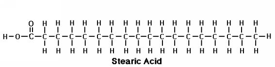
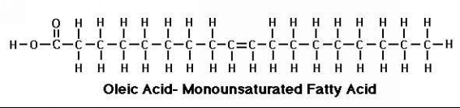
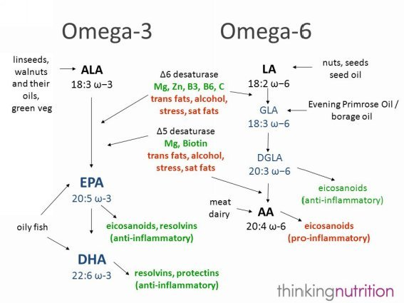
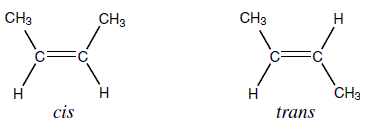
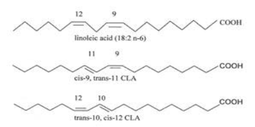
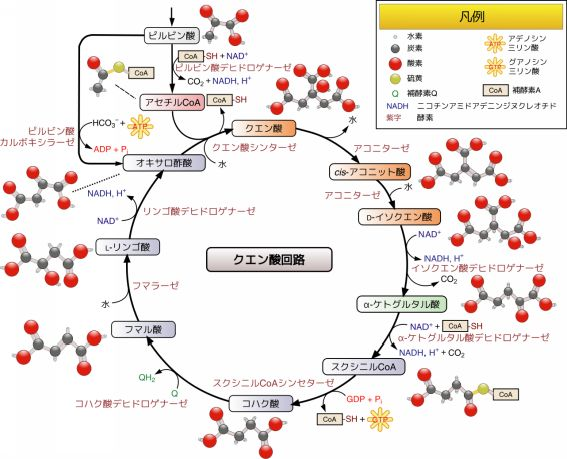

| 脂肪酸とケトン体 ～糖質制限ダイエットの科学: 山本義徳 業績集 ４ | |
| 山本義徳 | |
| UNKNOWN (2016) | |
脂肪酸とケトン体 ～糖質制限ダイエットの科学 目次
■第一章：脂肪とはなにか
1.1脂肪の構造
1.2脂肪の役割
1.3脂肪の代謝
■第二章：脂肪の合成と分解
2.1脂肪の合成メカニズム
2.2脂肪の分解メカニズム
■第三章：エイコサノイド
3.1エイコサノイドとはなにか
3.2善玉エイコサノイドと悪玉エイコサノイド
■第四章：それぞれの脂肪酸
4.1 EPAとDHA
4.2アラキドン酸
4.3オレイン酸
4.4 MCT（中鎖中性脂肪）
4.5 CLA（共役リノール酸）
■第五章：ケトン体とはなにか
5.1ケトン体の種類
5.2ケトン体の性質
5.3ケトーシスとケトアシドーシス
■第六章：糖質制限ダイエットの科学
6.1エビデンスの読み方
6.2糖質制限ダイエット～Pros and Cons
6.3糖質制限ダイエットの実際
6.4糖質制限とアスリート
■第一章：脂肪とはなにか
「今日は疲れていてエネルギーが足りない。だからエネルギーになる炭水化物を摂ろう。」これは分かります。「筋肉を増やしたい。だから筋肉の材料になるタンパク質を摂ろう。」これも分かります。
でも「体脂肪を減らしたい。だから食事から脂肪を取り除いてしまおう。」とは、なかなかなりません。普通の人の考え方だと、減らすのは脂肪ではなく、食事の「カロリー」を減らそうという話になります。またダイエットのために、脂肪ではなくなぜか糖質のほうを制限するやり方が最近では流行っています。
体脂肪と食べ物の脂肪とは、別のものなのでしょうか？また「中性脂肪」なんていうのもありますし、コレステロールも脂肪の仲間のような気がします。
私たちにとってタンパク質やアミノ酸は身近な存在ですし、炭水化物についてもよく知られるようになってきました。しかし「脂肪」については、あまり知らない人の方が多いのではないでしょうか。
この本では、その実態があまり知られていない「脂肪」について詳しく解説するとともに、最近流行の「糖質制限ダイエット」についても紹介していきます。なお勉強するのが嫌いな方は、最終章の「糖質制限ダイエットの科学」だけでもお読みください。
1.1 脂肪の構造
アミノ酸がいくつも集まると、タンパク質ができます。それと同じように「脂肪酸」が集まると、「脂肪」ができます。しかしアミノ酸にはアルカリ性のもの、中性のもの、酸性のものがありますが、脂肪と呼ばれるものは、すべて「中性」と決まっているのです。
脂肪酸はその名のとおり「酸」です。これがアルカリと結合することによって、脂肪は中性となります。このアルカリ部分になるものを、「グリセロール（グリセリン）」と呼びます。細かく言うと、「グリセロール1分子＋脂肪酸3分子」となったものが、「脂肪」となります。
グリセロールはアルコールの一種なのですが、これはどんな脂肪でも同じです。しかし脂肪酸にはさまざまな種類があって、この組み合わせによって脂肪の性質が変わってくるということになります。では脂肪酸にはどのようなものがあるのでしょうか。
○飽和脂肪酸と不飽和脂肪酸
脂肪酸は大きく分けて、「飽和脂肪酸」と「不飽和脂肪酸」の二つに分類することができます。脂肪を形づくる3分子の脂肪酸がすべて飽和脂肪酸ならば、この脂肪は「飽和脂肪」となり、ひとつでも不飽和脂肪酸があれば、それは「不飽和脂肪」となります。
この「飽和」とはいったいなんのことでしょうか。まずは代表的な飽和脂肪酸である、「ステアリン酸」の構造をみてみましょう。

Cは炭素、Hは水素です。一番端に「OH」というものがありますが、これはすぐそばにあるCとOにくっついていて、「-COOH」となっています。この「-COOH」をカルボキシル基といいます。「タンパク質とアミノ酸 後編」を読んだ方は「あ！」と思い出さないといけませんよ。
このように真ん中に炭素（C）が鎖状にいくつもつながっていて、カルボキシル基をひとつ持ったものを、「脂肪酸」と呼ぶことになっています。なおカルボキシル基と逆の端には炭素（C）が3つの水素（H）と結びついていますが、それを「メチル基（CH3-）」と呼びます。
さて、炭素原子はほかの原子と結びつくことのできる手を４本持っています。ステアリン酸の場合、2本の手と炭素（C）が結びつき、残りの2本の手は水素（H）と結びついています。つまりCの手が全て結びついていて、「飽和」しています。すべてのCがこのようになっているものを、「飽和脂肪酸」と呼びます。
次に、不飽和脂肪酸である「オレイン酸」の構造を見てみましょう。

真ん中のところにある二つの炭素（C）に注目してください。水素（H）とは１本の手でしかつながっていません。つまり空いている手があり、飽和していません。このような構造があるものを、「不飽和脂肪酸」と呼ぶのです。そしてこのような状態で結合しているところを、「不飽和結合」と呼びます。また炭素原子が二本の棒でつながっているため、「二重結合」とも呼びます。
なおオレイン酸は不飽和結合が1箇所だけなので、「モノ不飽和脂肪酸」と呼ばれます。リノール酸は不飽和結合が2箇所あるため、「ジ不飽和脂肪酸」、リノレン酸は不飽和結合が3箇所あるため、「トリ不飽和脂肪酸」と呼びます。
後のほうで出てくる「アラキドン酸」は不飽和結合が4箇所なので「テトラ不飽和脂肪酸」、「EPA（エイコサペンタエン酸）」は5箇所なので「ペンタ不飽和脂肪酸」、「DHA（ドコサヘキサエン酸）」は6箇所なので「ヘキサ不飽和脂肪酸」となります。
そしてこのような鎖状の分子は、不飽和結合のところが曲がりやすくなります。つまり二重結合のところが多ければ多いほど、ぐにゃぐにゃになり、液状になるのです。肉の脂身は飽和脂肪酸が多いため、固くなって固形となります。しかしサラダオイルは不飽和脂肪酸が多いため、液体になるのです。
なおオメガ3とかオメガ6という言葉を聞いたことのある人は多いでしょう。脂肪酸のメチル基側から数えて3番目の炭素に二重結合があると、これはオメガ3となります。6番目の炭素に二重結合があるものをオメガ6と言います。オメガ3の代表がEPAやDHA、αリノレン酸で、オメガ6の代表がリノール酸、オメガ9の代表がオレイン酸です。
オメガ3やオメガ6のことを、N-3とかN-6と呼ぶこともあります。オメガ3とN-3は同じで、オメガ6とN-6も同じ、オメガ9とN-9も同じです。この違いは何でしょうか。
例えばDHAの場合、炭素が22個あって、メチル基側から3番目の炭素と4番目の炭素が二重結合を成しています。これをカルボキシル基側から数えると、19番目と20番目の炭素ということになります。
オメガ3と呼ぶ場合、この「3」は「メチル基側から3番目＝カルボキシル基側から20番目」の炭素を指しています。
N-3の場合、これは「Nマイナス3」という意味で、22個ある炭素から3つ引いた「カルボキシル基側から19番目の炭素」を指しています。つまりオメガ3もN-3も同じものなのですが、対象としている炭素の位置が違うのです。
オレイン酸の構造を見返してみましょう。炭素の数は18個です。そしてメチル基側から数えて9個目の炭素が最初の二重結合となっています。よってオレイン酸はオメガ9となります。
オメガ9はN-9と同じですので、炭素の数18から9を引くと、答えは9。つまりカルボキシル側から9番目の炭素が二重結合となっているはずです。イラストを見て確認してみましょう。
○脂肪の仲間たち
ここまで普通に「脂肪」と呼んできましたが、脂肪ではなく「脂質」という言葉もよく聞かれます。この二つはどのように違うのでしょうか。
「脂肪酸＋グリセロール」は脂肪となりますが、さらにリン酸だとか糖質、タンパク質などが結合することがあります。たとえばリン酸が結合すると、それは細胞膜を構成する「リン脂質」となりますし、タンパク質と結合した「リポたんぱく」はコレステロールになります。このようなものも全部ひっくるめて、「脂質」と呼ぶのです。
ちなみに「体脂肪」には脂肪だけでなく水分なども含まれます。ですから純粋な脂肪が1グラムあたり9kcalなのに対して、体脂肪は1グラムあたり7.2kcalとなります。
1.2 脂肪の役割
脂肪はもちろん体内でエネルギー源となるわけですが、その他にもいろいろと重要な役割があります。箇条書きで解説していきましょう。
細胞の表面にある膜を細胞膜と呼びます。これは必要な物質を細胞の中に入れ、不必要な物質は入れないようにする重要な役割を果たしています。細胞膜を構成する重要な物質の代表が、リン脂質やコレステロールです。これらは脂肪が材料となって作られます。
「体脂肪の分解」のところで詳述しますが、脂肪は身体の重要なエネルギー源となります。また脂肪酸そのものだけでなく、後述する「ケトン体」もアセチルCoAになってエネルギー化されます。これは脂肪が代謝されてできる物質なのですが。特に四肢の筋肉量が多いと、ケトン体をエネルギーとして使う割合が大きいとされています。
副腎皮質ホルモンや男性ホルモン、女性ホルモンなどは、コレステロールから作られます。実際に脂肪の摂取量が少なくなってコレステロールの数値が低くなると、男性ホルモンや女性ホルモンのレベルが下がることが知られています。（※1,※2,※3）
また脂肪の摂取が少ないベジタリアンはテストステロンのレベルが低いことも報告されています。（※4,※5, ※6,※7,※8）
ホルモンレベルの適正化を考えると、だいたい総摂取カロリーの3割ほどは、脂肪から摂取するようにしたいところです。
エイコサノイドの章で詳述しますが、脂肪からつくられるエイコサノイドは身体の微調整を行い、さまざまな代謝をコントロールします。
コレステロールは胆嚢に胆汁として蓄えられますが、それがリパーゼ（脂肪を分解する酵素）と協力してビタミンAやEなど、脂溶性ビタミンの吸収を助けるのです。
ほかにも脂肪には脳細胞の神経線維を守る鞘の構成物質になったり、血管の内壁を保護したりする作用があります。また体温を調節し、代謝をコントロールする褐色脂肪細胞というものもありますし、内臓の位置を正常に保ったりする作用もあります
「脂肪」というと邪魔っけに感じてしまいがちですが、私たちの身体にとってこんなに重要な働きをしてくれているのです。
1.3脂肪の運命
では、食べた脂肪が体内ではどうなるのか、その運命をたどっていきましょう。まず食事で摂取された脂肪は膵臓から分泌される「リパーゼ」という酵素によって、腸で分解されます。分解されるというのは、「脂肪酸」と「グリセロール」とに分けられるということです。
ただし腸の中は基本的に水溶性ですので、消化酵素が働きにくくなっています。そこで胆嚢から「胆汁酸」が分泌され、これが脂肪を乳化し、リパーゼの働きを助けて消化しやすくしてくれます。
こうして分解された脂肪酸とグリセロールは小腸の細胞から吸収されます。そして、細胞の中でまた脂肪酸とグリセロールは結合し、さらにタンパク質も結合することによって、「カイロミクロン」という大きな複合体をつくっていきます。
カイロミクロンはリンパ管を通って左鎖骨にある静脈から出て心臓に行き、それから全身をめぐっていきます。カイロミクロンが筋肉に行けば、酸化されてエネルギーに変わり、脂肪細胞に行けば、ふたたび中性脂肪として貯蔵されるのです。
たいていの栄養素は毛細血管から肝臓を通っていくのですが、脂肪だけはこのような変わった経路を通ります。では、消化された脂肪はどのようにして「体脂肪」になるのでしょうか。また体脂肪はどのようにして燃焼し、エネルギーとなっていくのでしょうか。
■第二章：脂肪の合成と分解
2.1脂肪の合成メカニズム
脂肪を多く食べてしまえば、それはもちろん体脂肪として蓄積されてしまいます。しかし炭水化物を多く摂取しても、やはり体脂肪になってしまいます。このあたりの経路を追いかけてみましょう。
さきほど、カイロミクロンが脂肪細胞に行けば、ふたたび中性脂肪になって貯蔵されると説明しました。これをもう少し詳しく説明します。
カイロミクロンの中には脂肪酸とグリセロールが結合した中性脂肪が存在します。毛細血管の壁には「リポタンパクリパーゼ（LPL）」という酵素があって、これがカイロミクロンに働くと、中性脂肪は脂肪酸とグリセロールに分解されます。
すると脂肪酸は遊離脂肪酸となり、脂肪細胞に取り込まれます。そしてアシルCoAという物質になります。
このとき、体内にブドウ糖が多めに存在すると、糖質からエネルギーを産生する「解糖系」という回路が活性化します。そして解糖系の途中で「グリセロール3リン酸」という物質が大量に生成されます。
この解糖系でつくられたグリセロール3リン酸とアシルCoAが脂肪細胞の中で結びつき、リン酸が加水分解によって失われると、中性脂肪ができます。これが体脂肪となるわけです。
なお糖質を多めに摂取しているとインスリンが分泌されますが、インスリンはLPLの働きを活性化します。
つまり糖質はインスリンを出すという面、そしてグリセロール3リン酸の材料になるという面からも、体脂肪の合成にかかわってくるのです。
またブドウ糖が多めに存在するとき、肝臓ですぐにそれは脂肪に変換されます。肝臓でできた脂肪はコレステロールの一種であるVLDLをつくります。VLDLが血中に放出されると、脂肪細胞に移行します。
するとそれはLPLによって脂肪酸に分解され、やはりグリセロール3リン酸と結合して体脂肪が合成されるという流れをたどります。LPLは中性脂肪を分解することによって、体脂肪の合成を助ける、と覚えてください。
つまり、LPLの働きによって、カラダは糖質を容易に体脂肪にすることが可能となります。おそらくこれは飢餓にさらされたときのために、エネルギーを蓄積しておこうとするメカニズムなのでしょう。
なお面白いことに、私たちのカラダは脂肪を糖質にすることはできません。せっかく蓄積した脂肪ですから、そう簡単にエネルギー化されて燃えてしまっては困るということでしょうか。
2.2脂肪の分解メカニズム
逆に体脂肪が分解されるときは、どうなるのでしょうか。まず脂肪細胞内にあるホルモン感受性リパーゼ（HSL）という酵素が体脂肪（中性脂肪）に働きます。HSLの作用は、脂肪細胞内にある中性脂肪を脂肪酸とグリセロールに分解することです。これにより、脂肪酸が脂肪細胞外に放出されます。そして放出されて血液中に流れ出た脂肪酸がエネルギーとして燃焼しつくされれば、体脂肪は減少するということになります。HSLは体脂肪を分解して血中に放出することにより、脂肪酸がエネルギーとして燃えるのを助ける、と覚えてください。
では、HSLを働かせるにはどうすれば良いのでしょうか。この酵素は「アドレナリン」や「ノルアドレナリン」などのホルモンによって働くようになります。運動中はこれらのホルモンが分泌されるため、脂肪の分解が活発になるのです。
また成長ホルモンや甲状腺ホルモンなどにも、HSLを活性化させる働きがあります。逆にインスリンは逆にHSLの働きを抑えてしまいます。ですから炭水化物の摂り過ぎは、この点からもダイエットの邪魔になってしまうのです。
インスリンはHSLの活性を低下させてしまいますが、逆に摂取カロリーが少なくて血糖値が下がると、グルカゴンが分泌されます。グルカゴンには肝臓のグリコーゲンを分解する作用や糖新生を促進する作用、HSLの活性を高める作用があります。つまりグルカゴンはグリコーゲンを分解したり糖新生を促進したりして血糖値を高めると同時に、脂肪酸を放出することによってエネルギーを作りだす（体脂肪を燃やす）ように働きます。
さて、細胞外に放出された脂肪酸はミトコンドリアにおいて「β酸化」というエネルギー産生経路によって、エネルギーを生み出し、燃焼されます。ここで燃焼されないと、せっかく脂肪酸にまで分解されたのに、結局また脂肪細胞に逆戻りして体脂肪として蓄積されなおしてしまいます。では、脂肪酸はどのようにしてミトコンドリアに運び込まれるのでしょうか。
「タンパク質とアミノ酸 後編」で詳述しましたが、脂肪酸は、そのままではミトコンドリアに入り込むことはできません。「アシルカルニチン」に変換されて、はじめて入ることができます。まず脂肪酸は「CoA」と結合して「アシルCoA」となります。そしてアシルCoAがカルニチンと結びついて、アシルカルニチンになります。ここで使われる酵素をCPT-1と呼びます。
そしてミトコンドリアに入り込んだアシルカルニチンは、またアシルCoAとカルニチンとに分解されます。ここで使われる酵素をCPT-2と呼びます。そしてアシルCoAがアセチルCoAとなり、β酸化がはじまるという複雑な流れになっています。
なお食事が制限されている場合、特に炭水化物が制限されている場合は、「ケトン体」というものが発生します。炭水化物が足りないと、TCAサイクルというエネルギー産生経路における中間体が不足するため、サイクルが回りにくくなります。このときに脂肪酸がβ酸化してアセチルCoAを作り出していると、これが余ってしまうのです。
すると余ったアセチルCoAからは、「ケトン体」ができます。このケトン体からも、エネルギーを生み出すことができるのです。ケトン体については後で詳しく説明します。
ケトン体は主に心臓で使われているのですが、炭水化物がすくない状態だと脳でも使われます。また体幹部よりも四肢の筋肉でよく使われ、特に運動選手はケトン体をエネルギー化しやすいとされています。
○ペリリピンとは
HSLが脂肪細胞に働いて脂肪が分解されると書きました。しかしHSLが働きにくくなることがあります。脂肪細胞は普通の細胞と違うところがあり、普通の細胞は「核」が中心にあるのですが、脂肪細胞は「脂肪滴」が大部分を占めており、核は隅のほうに追いやられています。
脂肪滴の中心にはトリグリセリド（中性脂肪のこと）があり、その周囲にリン脂質があり、さらに表面をタンパク質が取り囲んでいるという構造になっています。
その表面を取り囲むタンパク質に、「ペリリピン」というものがあります。これに囲まれた脂肪滴はHSLの作用を受けにくいため、体脂肪が分解されにくくなっているのです。
ペリリピンが作れないマウスを使って、その脂肪組織を調べた研究があります。（※9）その結果、転写因子であるSREBP-1が活性化されておらず、脂肪合成遺伝子の発現も低下していました。この細胞にペリリピンを遺伝子導入し、成熟した脂肪細胞へと分化させたところ、脂肪滴の数が増えて脂肪蓄積量が増加しました。
つまり「脂肪滴の発生」→「ペリリピンがSREBP-1を活性化」→「脂肪分解低下＆体脂肪増加」ということになります。ということは、SREBP-1を不活化すれば良いわけです。それにはEPAとラクトフェリンが有効なようです。（※10,※11）
またペリリピンは平常時だとHSLの作用を阻害しますが、カテコールアミンによってリン酸化されると、逆にHSLの作用を増強してくれます。つまり運動によってアドレナリンやノルアドレナリン、ドーパミン（これらがカテコールアミン）が増えれば、脂肪分解も促進されるというわけです。
○ATGL
実はHSLの他にも重要な脂肪分解酵素があることが最近になって分かりました。2004年に同定されたATGL（Adipose Triglyceride Lipase）はHSLに比べ、トリグリセリド（中性脂肪）に対して強く作用することが分かってきたのです。
ATGLを活性化するための一番良い方法。これも「運動」です。運動することによってPPARγのmRNAや細胞質と核におけるタンパク質の発現が促され、ATGLが転写されます。
さらに脂肪滴にATGLを留める働きをするCGI-58 (Comparative Gene Identification-58)は、運動によって増加します。
これらCGI-58やペリリピンの増加は、運動したそのときだけでなく、運動後も長時間に渡って増加することがわかっています。つまり運動は消費カロリーを増やすだけでなく、脂肪分解酵素の働きも高めてくれるのです。
またインスリンはATGLの発現を低下させますが、その作用も運動によって減弱されます。
なおレスベラトロールやウルソル酸にはATGLを活性化する作用があるようです。
（※12,※13）
■第三章：エイコサノイド
3.1エイコサノイドとはなにか
私たちのカラダは、周りの環境からの影響に、できるだけ左右されないようにできています。そして体温や血圧、血糖値などは、常にある一定の幅に収まるようになっています。これを「ホメオスタシス」と呼びます。
ホメオスタシスはホルモンや神経によって維持されているのですが、この両方とも、全身的に働くダイナミックなアクションによってホメオスタシスの維持に働きます。たとえば空腹になって血糖値が下がると、前述の通り膵臓からグルカゴンが出てグリコーゲンをブドウ糖に変え、血糖値を上げようとします。
こうしたダイナミックなアクションのほかに、もっと細かいアクションによって微妙にカラダの状態を正常に保とうとする経路も存在します。それが「エイコサノイド」という局部的に働くホルモン様物質の作用で、血圧を微妙に調整したり、睡眠を誘発したり、子宮や気管支などの平滑筋を収縮させたりなどの働きが主なものとなります。
さて、エイコサノイドにはプロスタグランジンやトロンボキサン、ロイコトリエンなどの種類がありますが、これらは大きく次の3つの系統に分けることができます。
◇3系統に分けられるエイコサノイド
・ガンマリノレン酸（GLA）からつくられる1系統エイコサノイド
・アラキドン酸（AA）からつくられる2系統エイコサノイド
・エイコサペンタエン酸（EPA）からつくられる3系統エイコサノイド

これらのエイコサノイドを作るために必要な脂肪酸を、「必須脂肪酸」と呼びます。そしてGLAやアラキドン酸はリノール酸から作ることができますし、EPAはαリノレン酸から作ることができます。ですから「リノール酸」と「αリノレン酸」だけを必須脂肪酸とすることも可能です。
ただしリノール酸からGLAを作ったり、αリノレン酸からEPAを作ったりする代謝の流れは、それほどスムーズではありません。
たとえばアルコールや喫煙、ストレス、トランス脂肪酸などは、リノール酸からGLAをつくるのを邪魔してしまいます。またビタミンB6や亜鉛、マグネシウムなどの栄養素が足りなくても、GLAはつくられません。十分な1系統エイコサノイドを生成するためには、これらの栄養素をしっかり摂取し、アルコールやタバコは避けたほうが良いということになります。GLAは月見草オイル、クロフサスグリ油などに含まれますが、普通の食物からはなかなか摂取することができないので、リノール酸からの変換を期待したいところです。
いっぽう、EPAは青魚類に多く含まれますから、特にαリノレン酸を摂取しなくても、ときどき魚を食べるようにしておくだけで十分です。なおアラキドン酸は肉や卵、魚などに豊富に含まれるため、ベジタリアンでもない限り、不足する心配はありません。
○エイコサノイドの生成
さてエイコサノイドがホルモンと違うところは、これが「必要に応じて、そこの細胞で局所的に作られる」ということです。そして役目を果たした後は、速やかに分解されてしまいます。では、エイコサノイドはどのようにしてつくられるのでしょうか。
私たちの細胞には表面に「細胞膜」があって、物質を入れたり出したりするときの門のような役割をしています。そして細胞膜を構成する物質には、前述の「リン脂質」やコレステロールがあります。
このリン脂質に「ホスホリパーゼ」という酵素が働くと、脂肪酸がそこから切り出されて出てきます。この脂肪酸が、エイコサノイドになるのです。
なお、この酵素の働きを邪魔するのが、炎症を抑えたり喘息の発作を抑えたりする「ステロイド剤」です。つまりステロイド剤は、エイコサノイドを作らせないことによって、その作用を発揮するわけです。逆に言うと、炎症や喘息の発作などはエイコサノイドの作用によるものでもあります。
3.2善玉エイコサノイドと悪玉エイコサノイド
炎症や喘息の発作は、一般的に身体にとって有害となります。よってこれらを引き起こすものを、便宜上「悪玉エイコサノイド」と呼ぶことにしましょう。悪玉エイコサノイドは免疫を低下させたり、血液をドロドロにしたりしてしまう作用もあります。
逆に、身体にとって有用なエイコサノイドもあります。免疫力を増強したり、炎症を抑えたり、血液をサラサラにしたりする作用のあるものを、「善玉エイコサノイド」と呼ぶことにしましょう。
ステロイド剤は悪玉エイコサノイドが作られないように働きますが、同時に善玉エイコサノイドも作られなくしてしまうのです。それがステロイド剤の副作用ともなります。
具体的には、「アラキドン酸」からつくられる2系統エイコサノイドが、「悪玉エイコサノイド」になります。また、「エイコサペンタエン酸（EPA）」からつくられる3系統エイコサノイドは、「善玉エイコサノイド」です。なお「ガンマリノレン酸」からは善玉である1系統エイコサノイドと悪玉である2系統エイコサノイドの両方がつくられます。
エイコサノイドを生成するのがホスホリパーゼで、ステロイド剤はその作用を抑えるため、すべてのエイコサノイドが作れなくなります。しかしそうすると善玉エイコサノイドも作れなくなるため、問題が出てきます。
そこで、悪玉エイコサノイドだけ作れないようにすることを目的として、NSAIDs（Non-Steroidal Anti-Inflammatory Dugs：非ステロイド性抗炎症薬）という薬剤が開発されました。これはアラキドン酸から2系統エイコサノイドが作られるときに必要とされるシクロオキシゲナーゼ（COX）という酵素を阻害する作用があります。アスピリンやロキソニン、ボルタレン、イブプロフェンなどが代表的なNSAIDsです。
○悪玉にも必要な作用がある
アラキドン酸は卵や肉類に多く含まれますので、健康のためにはこれらを食べ過ぎないようにしたほうがいいのかも知れません。しかし後述しますが、アラキドン酸には筋肉を増やしたり脳の機能を維持したりする作用があるのです。
また、体内で合成される以上、悪玉にもそれなりの役割があると考えなければいけません。
血液をドロドロにする作用といえば、あまり良いことではないように思えます。しかしこの作用がないと、なにかで出血したときに、血が止まりにくくなってしまいます。怪我をしたときだけでなく、例えば脳出血のときなどは、これが命取りとなることもあります。
また胃粘膜の保護作用もあります。悪玉エイコサノイドがないと、胃酸が胃壁をどんどん溶かしてしまうのです。アスピリンなど、エイコサノイドの産生を止めるクスリを摂取すると、胃が悪くなるのはそのせいなのです。
そういった事実を考え合わせると、アラキドン酸を控え過ぎるのも問題です。むしろ「悪玉に対抗できるだけの善玉を発生させる」と考えてみましょう。すなわち善玉をつくるEPAを十分に摂取してカウンターにするわけです。EPAは青魚（サンマやイワシ、アジ、サーモンなど）に大量に含まれますので、積極的に食べるようにしたいものです。
なおαリノレン酸からEPAができますが、この代謝には多くの酵素が必要となり、また変換のスピードも速いものではありません。そして図を見ていただければわかりますが、リノール酸からγリノレン酸ができるときには、Δ6不飽和化酵素が必要となります。そしてαリノレン酸からEPAができるときにも、同じΔ6不飽和化酵素が必要となります。
亜麻仁油やエゴマ油はαリノレン酸を含むため、身体に良いと言われています。しかしリノール酸を大量に摂取している生活だと、Δ6不飽和化酵素の奪い合いになってしまい、それぞれの変換が上手くいかない可能性があることは知っておいたほうがいいでしょう。つまりEPAはEPAとして摂取し、αリノレン酸に期待しないほうが良いということです。
■第四章：それぞれの脂肪酸
4.1 EPAとDHA
1970年代にDyerbergとBangらにより、イヌイットの疫学調査が行われ、オメガ3脂肪酸を摂取していると心臓血管系疾患が少なくなることが知られました。
その後エイコサノイドに関する研究が進み、EPAからはロイコトリエンB5やプロスタグランジンE3、トロンボキサンB3などが生成され、これらにアラキドン酸の働きを抑えたり、血小板の凝集を抑えて血液を固まりにくくしたり、免疫を増強したり、炎症性サイトカインの生成を抑制したりすることが分かってきました。
最近になってさらにEPAはレゾルビン、DHAがプロテクチンといった内因性の抗炎症物質を生成することが判明しており、抗炎症作用の他にも病的な血管新生の抑制や好中球の浸潤抑制、神経細胞の保護作用やアルツハイマー患者の脳内におけるPD1産生量減少などの作用が知られています。
このようにオメガ3であるEPAやDHAには健康において多くのメリットがあるのですが、実は筋肉に対しても有益な効果があるのです。
「タンパク質とアミノ酸 前編」で解説した通り、私たちの体内にはタンパク質を分解する系が存在します。その中でも特に「選択的」なタンパク分解系のことを「ユビキチン・プロテアソーム系」と呼びます。
この系では主に不良品となったタンパク質が分解されますが、品質的に問題が全くなくても、「不使用」の状態が長く続くと、生命維持に必要ないとみなされ、タンパク質は分解されてしまうのです。筋肉もそれと同じで、トレーニングをサボッていると、どんどん筋肉が落ちて行ってしまうのは、このせいです。
この系においては、「ユビキチン」という小さなタンパク質が標的となるタンパク質に結合し、「ユビキチン化」されます。そして実際にタンパク質を分解するのはプロテアソームという酵素です。これが働くときには、「NF-κB」という核内転写因子が活性化されます。なお「核内転写因子」というのは、DNAの遺伝情報をRNAに転写する過程において働くタンパク質のことです。
通常の場合、NF-κBは「IκB」と結合しており、働きが抑えられています。しかしなんらかの刺激（酸化ストレスやPIF、IL-6やTNF-αなど）によってIκBがユビキチン化されると、プロテアソームがIκBを分解してしまい、NF-κBが活性化されてしまうのです。
ここでやっと本題に入りますが、EPAにはNF-κBの働きを強力に抑えてくれる作用があるのです。飢餓状態のマウスを使って行われた研究によれば、リノール酸やDHA、オリーブオイルなどでは抑えられなかったタンパク分解が、EPAの摂取によって見事に抑えられたという結果が出ています。（※14）
この研究によればEPAの添加によってタンパク分解が88%抑制されています。なおEPA単体や「EPA+カゼイン」ではタンパク合成は起こらず、「EPA+ロイシン＋アルギニン＋メチオニン」によってタンパク合成は倍増したとのことです。
またEPAとDHAはアディポネクチンやGLUT4の発現を増加させてSREBP1cを減少させて体脂肪の蓄積を防いだり、脂肪酸合成酵素の活性を低下させたりといった作用があることも判明しています。（※15）
SREBP-1cについてはペリリピンの項を読み返してみてください。
なお試験管内の実験では、DHAにはEPAにも勝るタンパク分解効果があるかもしれないという結果も出ています。（※16）
そしてEPAはタンパク分解を防ぐだけでなく、タンパク合成を高める作用も期待できます。
「タンパク質とアミノ酸 前編」でmTORシグナル伝達系によるタンパク合成について紹介しましたが、実はmTORの過度の活性化は癌細胞の成長を促進したり、老化を早めたりする可能性もあるのです。
そこでポイントとなるのが、mTORC1に関係なく、筋タンパクを合成させることができるかどうか、です。つまりタンパク合成酵素であるp70s6kや4E-BP1を「単独で」活性化させることができれば良いわけです。
それを可能としてくれるかもしれないのが、EPAです。EPAを摂取することにより、p70s6kが活性化され、このときにmTORC1に変化は起こりませんでした。（※17）
EPAの摂取により、タンパク合成は25%増加し、タンパク分解は22%低下しています。なおDHAはp70s6kを活性化しましたが、タンパク合成の増加やタンパク分解の低下には効果がありませんでした。
なお日本で行われた研究では、EPAが4E-BP1のリン酸化をIGF-1存在下において促進しています。（※18）ただしIGF-1はmTORを活性化しますが。
これらは生体で行われた研究ではないため、そのままヒトでも効果があると単純化はできません。しかしEPAのレベルを高めておくことが、健康的にバルクアップするために役立つ可能性は大いにありそうです。（※19）
またEPAには、PPARαを活性化する作用もあります。これは転写因子PPARの一種で、脂肪酸の酸化を亢進させたり、脂肪を合成する酵素や脂肪酸合成酵素の活性を低下させたり、先ほど出てきたIκBを増やしてNF-κBを抑える働きなどを持っているとされています。
PPARαが活性化するということは、脂肪のエネルギー化が進むことだと考えてください。実際、京都大学の研究で、高脂肪食に加えてEPAとDHAを10週間、マウスに与えたところ、ただ高脂肪食を与えただけの群と比較してEPAとDHAを摂取した群は内臓脂肪が15~25%減少していたのです。（※20）
この研究では脱共役タンパクであるUCP-1が増加することによって白色脂肪組織が褐色脂肪組織に似たベージュ細胞に変化する現象が示されています。またβ3アドレナリン受容体の発現も増えています。この作用はカプサイシンの受容体として知られるTRPV1という感覚受容チャネルを介して起こるもののようです。
またGPR120という時計遺伝子を介したインスリン分泌作用により、食事による体内時計をリセットする効果を強める作用も、魚油にはあるようです。（※21）
なおオメガ3脂肪酸は睾丸のサイズを増やして精子の質を高め、テストステロンを増やすのに対し、オメガ6脂肪酸とトランス脂肪酸はテストステロンを減らしたり、精子の質や量を悪くしたりといった報告もあります。（※22,※23,※24,※25,※26）
様々なメリットのあるEPAやDHAですが、実際に摂取するときは、どのようにすれば良いのでしょうか。
ラットでの研究ですが、面白い報告があります。実は毎日少しずつ摂取するよりも、週に1回だけまとめて摂取するほうが、バイオアベイラビリティ（生物学的利用能）が高かったとするものです。（※27）
オメガ3も他の脂肪と同様、β酸化によってエネルギーに変わります。しかし毎日のように魚油を摂取していた場合、その酸化率が高まってしまい、摂取したうちの84%がエネルギーになってしまうようです。逆に週1回の摂取だと酸化率が低く、75%程度に抑えられていました。
その結果、体内に留まる割合として、毎日摂取した場合は15%程度ですが、週1回だと23%が留まるという結果になったようです。
実際に必要な摂取量はどれくらいでしょうか。日本でJELIS (Japan EPA Lipid Intervention Study)と呼ばれる大規模な臨床試験が行われていて、1996年から2004年にかけ、18645名を対象にEPA群とコントロール群に分けて行われました。
ここではEPAの薬剤を一日に1800mg投与しています。その結果、冠動脈イベントの発症率は19%減少し、個別の評価項目では狭心症のリスクが24%低下しています。
サプリメントや薬剤ではなく、魚を食べて摂取する場合はどうでしょう。例えばイワシの場合、100gあたりに1400mgのEPAと1200mgのDHAが含まれます。サンマの場合は100gあたりに800mgのEPAと1300mgのDHA、サバの場合は100gあたりに1200mgのEPAと1700mgのDHAとなります（すべて概算）。
EPAだけでなくDHAにも効果があることを考えると、毎日摂取するサプリメントとして有効な量としては、一日に「EPA + DHA」として2000~2500mg程度と考えられます。
この場合、イワシだったら毎日100gずつ食べることになりますが、先ほどの結果を踏まえて考えると、もしかしたら週1回、700gを食べたほうが効果は高まるのかもしれません。
魚油サプリメントの場合も、もしかしたら毎日2000~2500mg飲むのではなく、週に1回、まとめて15000mgくらい飲んだほうが良いという可能性もありそうです。人間での研究結果を待ちたいところです。
4.2アラキドン酸
アラキドン酸（AA）は悪玉エイコサノイドを産生するため、過度の摂取は健康に悪いと考えられます。しかし、AAにはトレーニングの効果を高めるという側面もあるのです。
トレーニングはPGF2αやPGE2など2系統エイコサノイドを分泌させ（※28、※29）、特にストレッチによるこれらの分泌はタンパク合成を促進して細胞の成長を促します。（※30）
そしてこれらの悪玉エイコサノイドはトレーニング後の筋タンパク合成作用を増し、IGF-1の発現を強化します。さらに衛星細胞の融合（筋肉周辺にある幼若細胞が筋細胞になる）を促し、さらに男性ホルモンレセプターの合成を促進するのです。（※31,※32,※33）
さて、1000mgのアラキドン酸を50日間摂取することにより、摂取していない群に比べ、筋出力や無酸素運動パワーの伸びが上回ったという報告があります。（※34）
また31名の男性トレーニーに50日間に渡って1000mgのアラキドン酸を摂取させたところ、総テストステロンの増加が起こっています。（※35）
タンパ大学での実験によれば、1500mgのアラキドン酸を8週間摂取することにより、摂取していない群に比べ、筋出力や無酸素運動パワーにおいて、遙かに上回る結果を出すことが出来たのです。除脂肪体重も1.5kg増えていました。（※36）
そして最近行われた30名のトレーニーを対象とした研究では、8週間に渡って1500mgのアラキドン酸を摂取したところ、除脂肪体重が2.9%増加、8.7%の上体の筋力増加、ピークパワーの12.7%増加という結果が出ています。（※37）
Aktの増加が見られ、myoDとmyogeninの増加も起こりました。
トレーニングは筋肉に物理的ストレスを与えて炎症を引き起こし、それが発達の引き金となりますが、AAはその炎症を促進することで発達を増強するのかもしれません。
ボディビルダーやアスリート、格闘家たちは、経験的に肉類を多く食べることが勝利に繋がると考えていますが。これは理由があってのこと。またアラキドン酸は体内で「アナンダミド」に変わり、これがメンタル面でも良い影響をもたらしてくれます。
日本でも某大手サプリメントメーカーがアラキドン酸のサプリメントを出しています。これはEPAとDHAも一緒に含んでいますが、一日の量としてのアラキドン酸摂取量は120mgに過ぎません。
しかし卵を1個食べれば86mgのアラキドン酸が摂取できます。また豚レバーを100g食べれば300mgのアラキドン酸が摂取可能です。
なお前述の通り、アラキドン酸の悪玉エイコサノイド生成に対するカウンターとして、EPAはぜひ摂取するようにしてください。
4.3オレイン酸
オリーブオイルをふんだんに使う地中海式の食事が健康によいということは、半ば常識となっています。米国の男性消防士780名を対象にしたコホート研究によれば、地中海式ダイエットを行ったことによりコレステロール値や血圧、血糖値などのリスクが35%低下し、また体重増加のリスクも43%低下しています。（※38）
また脳にも良い影響があるようです。平均80.1歳の老人674名を対象にした横断研究では、魚の摂取量が多いほど総灰白質容積が大きく、肉の摂取量が少ないほど総灰白質容積が小さいとともに総白質容積も小さいという結果が出ました。（※39）
地中海式ダイエットにさらにオリーブオイルとナッツを追加することで、記憶力が改善されたという報告もあります。（※40）
さらに地中海式ダイエットはテロメアの長さを維持してくれる可能性もあります。女性看護師4676名を対象にした非常に長期の追跡調査によると、地中海式ダイエットに近い食生活を送っているほどテロメアが長い状態が保持されていることがわかりました。（※41）
またコロンビア大学の研究チームによれば、オリーブオイルを豊富に使った「地中海式ダイエット」を行った900人の被験者を追跡調査したところ、腎臓疾患のリスクが平均17.0%下がったとのことです。
特に厳格に地中海式の食事内容を守った群は、50%までリスクが低下し、腎臓の負担は42.0%も少なくなったとのことです。（※42）
なお鳥のから揚げやフライドポテトなどの「揚げ物」は悪い油を使うと過酸化脂質が増加し、健康に悪影響をもたらします。この「揚げ物」に使う油も、オリーブオイルにしたほうが良いようです。
オリーブオイルとトウモロコシ油、大豆油、ヒマワリ油の4種類の油でジャガイモを揚げ、それを10回繰り返した研究によれば、もっとも劣化が早かったのがヒマワリ油で、もっとも劣化が少なかったのがオリーブオイルだったそうです。（※43）
こうしたオリーブオイルの健康への効果は、オレイン酸によるところが大です。他の油に比べ、オリーブオイルのオレイン酸含有量は遥かに大きく、70%以上にもなるのです。
オレイン酸にはGLP-1というペプチドホルモンを分泌させる作用があり、これはインスリンの働きを高めるとともに、「小胞体ストレス」を緩和する可能性があります。
「タンパク質とアミノ酸 前編」でタンパク質の構造について書きましたが、正常な高次構造をつくれなかったタンパク質は、「小胞体」というところに蓄積してしまいます。これによる様々な障害を「小胞体ストレス」と呼びます。
肉に多いパルミチン酸には小胞体ストレスを高める作用があるのですが、この作用をオレイン酸が緩和してくれるのかもしれません。（※44）
残念ながらオリーブオイルには「ニセモノ」が多いようで、ラベルにはエキストラバージンと書いてあっても、IOC（国際オリーブ協会）の基準を満たしていない割合が非常に高いようです。
少なくとも、大きなボトルに入っているものは酸化の危険があるため、小さい遮光瓶に入っている短期間で使い切れるものを選ぶようにしたほうが良いでしょう。価格を気にしないのでしたら、小豆島で生産されているオリーブオイルをお勧めしたいところです。
4.4 MCT（中鎖中性脂肪）
MCTとは中鎖中性脂肪のことです。中鎖というのは炭素の数が中くらいということで、脂肪酸に含まれる炭素の数が8個のカプリル酸や10個のカプリン酸（オクタン酸）のことを、MCTと呼びます。
このように炭素数が少ないと消化吸収が早く、またミトコンドリアに運ばれるときにカルニチンを必要としないため、エネルギー化も早くなります。
なお炭素数が12個のラウリン酸はココナッツオイルに多く含まれ、このラウリン酸も中鎖脂肪に分類することがあります。「カルニチンを必要とするか否か」で言えば、ラウリン酸はカルニチンを必要としません。（※45）つまりこの意味ではココナッツオイルは中鎖脂肪に分類されるのです。
ココナッツオイルの約半分がラウリン酸で、10%程度がカプリル酸とカプリン酸、残りは長鎖脂肪酸です。
ココナッツオイルは味も良く、簡単に入手できますが、効果としては純粋なMCTのほうが高くなります。MCTは長鎖脂肪酸（パルミチン酸）に比べて4倍速く酸化され、ケトン体生成量は10倍にもなります。（※46）
しかしココナッツオイルは摂取3時間後に血中ケトン体レベルが最大になるのに対し、MCTは摂取1.5時間後には最大レベルになります。（※47）つまりココナッツオイルはMCTに比べ、それだけ吸収が遅いということになります。
ケトン体については後述しますが、低糖質ダイエットをしているときには、いかにケトン体レベルを迅速に高めるかがポイントとなります。そのため、普通の食事から低糖質ダイエットに移行する際に、MCTオイルは大きな助けとなります。
なお日本で行われた研究では、一度に大量のMCTオイルを摂取すると脂肪酸合成酵素が活性化するという結果が出ており（※48）、他の長鎖脂肪とMCTをミックスすることが推奨されています。
しかしこれは糖質を摂取していない状態での実験ではありません。普通の栄養状態でMCTが追加されればオーバーカロリーとなり、脂肪の合成が活発になるのは当然でしょう。
「タンパク質とアミノ酸 前編」で紹介したDIT反応（食事誘発性体熱産生）ですが、MCTは消化吸収が早いことからDIT反応も活発であり、食後6時間までのDIT総和値はMCTのほうが長鎖脂肪酸よりも優位に多いことが分かっています。（※49、※50）
なおMCTオイルを使うことによって、オリーブオイル群よりも体重を減らすことができた（平均1.7kg）という報告もあります。計算上は一日に45kcalの消費カロリー増加となりました。食事内容は低糖質ダイエットではなく、普通のダイエット食で、油の内容を変えただけというものです。（※51）
これも日本で行われた研究ですが、一日10gのMCTを12週間に渡って摂取したところ、BMI23以上の男女の体重と体脂肪率が顕著に低下したという結果が出ています。（※8）
MCTは消化が早い分、お腹が緩くなってしまうことがありますので、できるだけ小分けにして（一回5g程度）摂取するようにしましょう。5gでもダメな場合は、少量のレシチン（ティースプーン半分程度でOK）に溶かして乳化させると良いかもしれません。
国内では「マクトンオイル」で検索すると見つけやすいと思います。なお必ず100%MCTとなっているかどうかを確認してください。仙台勝山館（筆者はまったく関係しておりません）というところの商品も良いと思います。
4.5 CLA（共役リノール酸）
「トランス脂肪酸は身体に悪い」というのは有名です。この「トランス」というのは何でしょうか？
最初に戻って、オレイン酸の構造を見てみましょう。二つの炭素 (C)の間が二重結合になっており、水素 (H)と結びついています。普通の脂肪酸はこの水素が同じ側についており、それをシス型と言います。シスは「こちら側の」という意味です。
その一方で、水素が炭素を挟んで向かい側にある構造を、トランス型と言います。トランスとは「向こう側の」という意味です。

ではなぜトランス型は身体に悪いのでしょうか。実は自然界にあるほとんどの脂肪酸はシス型で、トランス型脂肪酸は人工的に作り出されたものなのです。
不飽和脂肪酸は酸化しやすく、融点も低く、安定していません。そこに水素を添加すると、飽和脂肪酸に近い形となり、安定した油となるのです。しかし水素を添加する際には自然なシス型だけでなく、トランス型も一緒にできてしまうのです。
自然界にもトランス脂肪酸は存在します。その代表的なものがバクセン酸で、牛などの反芻動物に多く存在します。これは牛の胃の中にいるバクテリアによってつくられます。牛肉や牛乳、ヨーグルトなどにもバクセン酸は含まれます。なおバクセン酸は体内で後述のCLAに変わります。
ただし天然のトランス脂肪酸は人工のものと体内における動態が違うようです。ラットにバクセン酸を与えたところ、炎症が減り、コレステロール値が改善し、中性脂肪も低下したという報告があります。（※53,※54,※55）
人工的につくられたトランス脂肪酸はエライジン酸が多く、これは体内で正常に代謝できないため、さまざまな問題を引き起こすのです。
次に「共役」とはなんでしょうか。これは図の通り、普通のリノール酸はシス型の二重結合が隣同士にあります。しかし共役リノール酸はシス型二重結合の隣にトランス型二重結合があります。そのためリノール酸に比べて、より「接合（共役）」しており、このような構造のリノール酸を共役リノール酸（CLA）と呼びます。

ではCLAには、どのような作用があるのでしょうか。箇条書きで紹介します。
◇CLAの作用
1. LPLの働きを抑える。（※55）
2. HSLの働きを高める。（※55）
3. CPT（カルニチンパルミトイルトランスフェラーゼ）の働きを高める。（※55）
4. PPAR-γを活性化することにより、インスリン感受性を高める。（※55
5.テストステロンをふやす。（※56,※57）
6.抗酸化作用を持ち、免疫を高める。（※58）
ここまで読んでくれた読者でしたら、1~3については既にお判りでしょう。CLAはLPL活性を抑えて体脂肪の合成を減らし、HSL活性を高めて体脂肪の分解を促進し、CPT活性を高めて脂肪の燃焼をスムーズにするように働きます。
PPAR-γについてはPPAR-αと同じ転写因子ですが、これは主に脂肪組織に存在して抗糖尿病作用や抗動脈硬化作用、抗炎症作用などを発揮します。
なお少し前に、「トマトを食べると痩せる！」という京都大学の研究（※59）が世間をにぎわせました。トマトには13-OXO-ODAという成分が存在します。その成分にはPPARαを活性化する作用があります。
この研究では13-OXO-ODAがPPARαを活性化することにより、高脂肪食によって肥満化されたマウスの血中および肝臓内中性脂肪を減らしたというものです。そしてCLAはこの物質の前駆体でもあります。
しかしここで重要なのは、PPARαの活性化はペルオキシゾームにおける酸化（β酸化）を活性化するということになっていますが、実はβ酸化だけではATPは造られないのです。そのときに造られた生成物がミトコンドリアに送られて、はじめてATPが造られます。
この研究でも、実はマウスの体重は減っていません。つまり脂肪は酸化分解されたものの、エネルギーとして燃えるところまではいかなかったということです。
トマトであれ、CLAであれ、実際に運動してATPを消費しないと、上手く体脂肪は燃えてくれないということなのです。
ちなみに、CLAは普通のトランス脂肪酸と同じで身体に悪いという意見もあります。しかし生涯を通じてCLAの多い自然の食物を摂取することは肥満の解消につながり、むしろ健康によいのではないかという結論のレビュー（2015年）もあります。（※60）
現時点ではCLAによる健康への悪影響を心配する必要はないでしょう。
■第五章：ケトン体とはなにか
私たちの身体はATPをエネルギー源として使っています。ATPをつくる経路は「ATP-CP系」と「解糖系」、そして「酸化的リン酸化」の3つに分けることができます。
ATP-CP系によってクレアチンリン酸からATPがつくられ、解糖系によってブドウ糖がピルビン酸になる過程でATPがつくられ、酸化的リン酸化によってピルビン酸が二酸化炭素と水になる過程でATPがつくられます。
TCAサイクル（クエン酸サイクル、クレブスサイクル）という名前を聞いたことはありますか？ これは解糖系と酸化的リン酸化をつなぐ回路です。ピルビン酸を基にしてアセチルCoAとオキサロ酢酸をつくりだし、この二つを結合させることによってクエン酸を作り出します。作り出されたクエン酸はαケトグルタル酸やコハク酸、フマル酸を経てオキサロ酢酸となり、アセチルCoAと再度結合してクエン酸になり・・というように循環していきます。TCAサイクルが回ることによってNADHやFADH2が作られ、これらを材料としてATPが生成される酸化的リン酸化につながっていきます。
ここをちょっと詳しくなぞってみましょう。
wikipediaより
ビタミンB1にリン酸2個が結合すると、TPP（チアミンピロリン酸）ができます。これがピルビン酸と反応すると、炭酸ガスが外れて（脱炭酸反応）、アセチル基が残ります。
この残ったアセチル基が、TPPからリポ酸に渡されます。そこにCoAがやってきてアセチル基を受け取り、アセチルCoAがつくられます。
それとは別に、ミトコンドリアの中にはピルビン酸カルボキシラーゼという酵素があります。これは二酸化炭素とATPを使って、ピルビン酸からオキサロ酢酸を作り出す酵素です。この酵素はビオチンを補酵素とします。
つまりピルビン酸からは、アセチルCoAとオキサロ酢酸ができるわけです。図を確認してみてください。
さて、アセチルCoAを作り出す他の反応もあります。これは脂肪酸を材料とします。脂肪酸から炭素が二つずつ外れていくと、これがアセチルCoAとなるのです。
例えばパルミチン酸の場合、炭素が18個ありますので、9個のアセチルCoAができるわけです。この反応をβ酸化と呼びます。
このとき、糖質を制限しているとどうなるのでしょうか。糖質が足りないと、解糖系が働かないため、ピルビン酸ができなくなります。するとピルビン酸を材料とするアセチルCoAとオキサロ酢酸ができなくなります。
また糖質が足りないときは、「糖新生」が起こります。このときは乳酸やアラニンなどのアミノ酸、脂肪から取り出したグリセロールなどを元にしてピルビン酸を作り出します。そしてピルビン酸からオキサロ酢酸がつくられ、それがホスホエノールピルビン酸となり、後は解糖系を逆戻りしてグルコースが作られます。
つまり通常はピルビン酸がアセチルCoAとオキサロ酢酸の両方になるのですが、糖質を制限しているときは、糖新生のためにオキサロ酢酸が使われてしまいます。
しかしこのとき、脂質をしっかり摂取しているとβ酸化によりアセチルCoAが大量にできます。つまりアセチルCoAが大量にあるのに、オキサロ酢酸が足りていない状況です。オキサロ酢酸がないと、TCAサイクルが回りません。
5.1 ケトン体とは
そこで肝臓において余剰のアセチルCoAがケトン体に変えられます。ケトン体は水溶性であり、脂肪酸と違って体内の組織（脳も含む）に効率よく運ばれやすいのです。そして身体の様々な組織に運ばれたケトン体はアセチルCoAに戻ります。
このとき、ケトン体（アセト酢酸）はスクシニルCoAトランスフェラーゼという酵素によってアセトアセチルCoAとコハク酸になります。アセトアセチルCoAはアセチルCoAになってTCAサイクルに入ります。つまりアセチルCoAからケトン体が作られ、できたケトン体がまたアセチルCoAに戻ってエネルギーになるという流れなのです。アセチルCoAはそのまま血中に流すことができないため、ケトン体に一度姿を変えるのです。
そしてコハク酸はリンゴ酸を経てオキサロ酢酸を作り出します。こうしてオキサロ酢酸ができるため、TCAサイクルは順調に機能するようになり、酸化的リン酸化を経てATPを産みだすことができるのです。
また肝臓の酵素で知られるAST（アスパラギン酸アミノトランスフェラーゼ）の名前が示すように、オキサロ酢酸はアスパラギン酸からASTによっても作られます。グルタミン酸もαケトグルタル酸を経てオキサロ酢酸を作り出します。
他にも様々なアミノ酸がαケトグルタル酸やスクシニルCoA、フマル酸などTCAサイクルの中間体となり、オキサロ酢酸生成を手伝います。
なお肝臓にはスクシニルCoAトランスフェラーゼがありません。つまり肝臓はケトン体をエネルギーとして使えません。肝臓はあくまでもエネルギーを供給する場所で、自分でエネルギーを使ってしまわないようにしているのです。
逆にスクシニルCoAトランスフェラーゼが活発なのが「筋肉」です。つまり筋肉の多い人は、それだけケトン体をエネルギーにしやすくなっているのです。
なおケトン体は具体的に言うと「アセト酢酸」、「βヒドロキシ酪酸（BHB）」、「アセトン」の3つを指します。このうちアセトンはエネルギーになりません。ケトン体をエネルギーとして使っているときは口から甘い香り（ケトン臭）がしますが、これはアセトンの匂いです。
5.2 ケトン体の性質
ひと昔前は、脳がエネルギーとして使えるのはブドウ糖だけだと言われていました。だから糖質をしっかり摂取しないと頭が働かないとか、朝ご飯を食べないと勉強ができなくなるなどと言われていたのです。
しかし1970年代に発行された生化学の教科書には、脳はケトン体をエネルギーとして使うことができる。飢餓の3日後には脳が使うエネルギーの3分の1はケトン体となり、飢餓が数週間続くと3分の2がケトン体となる、といった内容が既に書かれています。（ストライヤー生化学より）
脳ではなく身体全体のエネルギー供給に占めるケトン体の割合としては、1晩の絶食で2~6%、3日間の絶食で30~40%になるようです。
なお糖がダメなら脂肪をエネルギーにしたいところですが、脂肪酸はそのままだと毒性（界面活性作用が細胞膜を溶かすなど）があるため、血液を介して大量に輸送することができません。またほとんどの脂肪酸は血液脳関門を通ることができません。そのため、安全かつ血液脳関門を通ることができるケトン体に変えることが必要なのです。
ただしEPAやDHAは血液脳関門を通ることが知られています。（※63）
ちなみに脳は乳酸もエネルギーにすることができます。ともと乳酸は低血糖時にエネルギー源となることが知られていて、脳の神経細胞でグルコースと同じように使われ、それは通常で全体の約10%程度、理論上は60%まで代替可能だとされてきました。（※61）
そして最近の報告により、脳の星状細胞において高濃度で存在する乳酸が、ニューロンに向かって流れていることが実際に確認されています。（※62）
なお赤血球はミトコンドリアがないため、糖質しかエネルギーとして使うことができません。また前述のとおり、肝臓ではケトン体をエネルギーとして使うことができません。
後述するケトアシドーシスが問題となるため、長らくケトン体は悪者だと考えられていました。しかし実はケトン体、特にβヒドロキシ酪酸（BHB）は数々の健康に良い影響があることが分かってきたのです。
DNAは先天的なもので、それ自体に変化は起こりません。しかしDNAのプロモータ領域に「メチル化」が起こると、遺伝子が転写できなくなってしまいます。逆にDNAと結合しているタンパク質である「ヒストン」がアセチル化されると、遺伝子の転写が起こりやすくなります。このようにDNAに後天的な刺激が加わり、遺伝情報が変化することを「エピジェネティクス」と呼びます。
BHBにはヒストン脱アセチル化酵素を阻害する作用があり、Foxo3a遺伝子のヒストンアセチル化を促進し、MnSODやカタラーゼなどの生体内抗酸化酵素の発現を増やすことで酸化ストレスを緩和するという報告があります。（※64）
また血管の炎症や動脈硬化を促進するNLRP3インフラマソームをブロックする作用もあります。（※65）
さらにNF-κBの活性を阻害してリポポリサッカライドによる炎症を抑制したり（※66）、ナイアシンの受容体であるGPR109Aのリガンドとして働き、抗炎症作用を起こしたり（※67）する作用が知られています。
また運動によってBDNFという神経成長因子が増えることが知られていますが、これのBHBの作用を介して起こるものです。（※68）
さらにアセト酢酸が筋再生を促すことも知られていますし（※69）、ケトン体自体が寿命延長に関係してくるメカニズムについても、最近になってわかってきました。（※70）
このように健康面においてむしろ良い影響があると思われるケトン体ですが、問題とされるケトアシドーシスとはいったい何でしょうか。
5.3ケトーシスとケトアシドーシス
血中のケトン体が増え、ケトン体を主にエネルギー源として使っている状態になることを「ケトーシス」と呼びます。ケトン体は酸性ですのでpHが低下しがちですが、体内には十分にそれを緩衝する機能があるため、通常はpHを適正に保つことができます。
糖尿病でインスリンが適正に働いていない場合も、糖質を使うことができないため、ケトン体が主なエネルギー源になります。インスリンには糖新生を抑制する作用があるのですが、糖尿病でインスリンが働かないと、糖新生が活発になってしまい、血糖値が高くなります。そのうえでケトン体も急増します。
血糖値が高くなり、尿に含まれる糖が多くなると、浸透圧を調整するために尿の水分量が増え、脱水が起こります。こういう状態になると体液を適正な状態に保つことができず、体液が酸性に傾いてしまいます。このように体液のpHをコントロールできなくなるまでにケトン体が増えた状態を「ケトアシドーシス」と呼びます。
アシドーシスは血液が酸性になっているという意味です。これは食あたりや感染症などで脱水になったときにも起こります。
またインスリンが働かないいっぽうで、グルカゴンやコルチゾル、アドレナリンは増加しますので、HSLが活性化し、脂肪の分解が増えて血中に大量の遊離脂肪酸が放出され、これが毒性を持つとともに、血中ケトン体をさらに増やしていきます。
通常、血中ケトン体は0.1mmol/L程度です。これが糖尿病性ケトアシドーシスのときは、3.8mmol/L以上になると言われます。（※71）
糖質を制限した場合に起こるケトーシスのときは通常の10倍程度で、1mmol.L程度ですので、これは十分にpHを緩衝できるレベルです。ただし糖質制限食を続け、かつインスリンが正常に働いている健常人の場合は3~4mmol/Lでも特に問題は起こっていないという意見もあります。
実際に絶食を行った場合、ケトン体の血中濃度は6~8mmol/Lで安定したという報告もあり（※72、）、このとき特にアシドーシスは起こしていません。一般的な糖質制限食であれば、健常人がケトアシドーシスを引き起こすことはないと考えて良いでしょう。
なおケトン体が体内に増えているかどうかを知るためには「ケトスティック」という試験紙が便利です。これは尿を試験紙に付けて、色が変わるのを見ることでケトン体の尿中濃度を調べることができます。
ただし体内でケトン体をエネルギーとするのに慣れてくると、ケトン体がエネルギーとして使われるため、尿に出てこなくなることがあります。その場合、ケトスティックに反応が出なくなってしまいます。
このようなときは尿ではなく、血中のケトン体を測定するしかありません。現時点では「プレシジョン・エクシード」や「プレシジョン・ネオ」などの機器が市販され、血中BHBを測定可能となっています。
■第六章：糖質制限ダイエットの科学
いよいよ糖質制限ダイエットについて具体的に解説していきます。糖質制限ダイエットについて、日本では最近になって爆発的に広まり始めましたが、実は非常に古い歴史があります。
1877年に刊行されたトルストイの「アンナ・カレーニナ」の中には、ウローンスキィが競馬レースに出るため、体重を160ポンドまで落とそうとしてデンプンとデザートを避けた、という記述があります。
そしてアトキンスが「アトキンス・ダイエット」として糖質制限を爆発的に広めます。2003年にアトキンスは氷の上で足を滑らせて頭を打ち、そのせいで亡くなるのですが、亡くなったときの体重が258ポンドだったということで、当時は糖質制限の効果を危惧する人もいました。
しかし実際に病院に運ばれたときは195ポンドです。治療によって浮腫んだせいで、体重がそこまで増えてしまったと言われています。
日本では米食中心の食生活だったせいか、糖質制限が広まるには時間がかかりました。しかしボディビルダーの間では須藤孝三氏が毎日松坂肉を2kg食べたという話もあり、1980年代中心まではダイエット中に糖質を制限するのは常識的だったようです。
松坂肉は脂が多いため、期せずして「正しい」糖質制限となったのでしょう。ササミや卵白などを中心とした「間違った」糖質制限では減量が上手くいくはずもなく、1980年代後半からは糖質を摂取するダイエット法が主流となります。なぜ脂が多くないとダメなのかは後述します。
古くからの和食は糖質が多く、日本人の平均寿命の長さから、糖質の必要性を訴える人も数多くいます。また米を食べていた人力車の車夫が、西欧式の食事に変えたところ、急にスタミナが無くなったとする「ベルツの実験」などは、トレーニング関係の方なら一度は聞いたことがあるのではないでしょうか。
6.1エビデンスの読み方
糖質制限を行ったら体調が良くなったとか、逆流性食道炎が治ったとか、リバウンドも無しにダイエットに成功したとかいう体験談は数多くあります。しかしこれらは単なる「個人の感想」であり、アヤシイ健康器具の宣伝と大差ありません。
個人ではなく、医者や生化学者などの専門家の意見であれば、少しはマシになります。そして専門家が幾つかの「症例」をまとめて報告すると、さらに信頼度が高くなります。糖質制限を行った群と、行わない群とで比較すると、またまた信頼度が高くなります。
このような感じで信頼度が高い順に研究のレベルを並べると、次のようになります。
1a：ランダム化比較試験のメタ・アナリシス
1b：少なくとも一つのランダム化比較試験
2a：ランダム割付を伴わない同時コントロールを伴うコホート研究
2b：ランダム割付を伴わない過去のコントロールを伴うコホート研究
3：症例対象研究
4：処置前後の比較など、前後比較や対照群を伴わない研究
5：症例報告
6：専門家個人の意見、専門家委員会報告
コホート研究というのは、集団を追跡調査して観察する研究です。例えば喫煙する人を集め、禁煙した集団と、喫煙を続ける集団とに分けて数年間観察するわけです。この集団を振り分けるときに、健康そうな人と不健康そうな人とで分けたのでは意味がありませんので、くじ引きなどで集団を分けます。これがランダム化です。
ただし交絡バイアスと言って、禁煙する群は「どうせなら運動したり、食事に気を付けたりして健康に気を付けよう」などと考えてしまう可能性があります。このように生活習慣が結果に影響してしまう問題は、なかなか取り除けません。
また長期に渡る調査では、食事内容は「アンケート」によって知らされます。実際に食べたものがアンケートに記入されているとは限らず、また長期に渡って正しく食事内容を記載していたとも考えにくいでしょう。後述の※74や※75の論文がその代表例です。
そのため、精度の高い研究であっても、一つだけでは信頼されず、数多くの研究をまとめて分析する「メタ・アナリシス」が必要となります。
ただし研究者によっては自分の思うような結果を出すために、都合のよい論文だけを選択してメタ・アナリシスを行うことがあります。
糖質制限で言えば、「能登論文」（※73）がその批判を受けています。このメタ・アナリシスでは9件の論文が選択され、「糖質制限は脂肪リスクが上昇する」と結論付けています。いかしこの分析では観察研究が多く、信頼度の低い論文が少なくとも2件（※74,※75）あり、結論にバイアスがかけられているという批判があります。
6.2糖質制限ダイエット ～Pros and Cons
では信頼のおけそうな論文を幾つかみてみましょう。13の研究を基にしたメタ・アナリシスでは低糖質ダイエット群（一日の糖質摂取量50g以下）は体重の減少が低脂肪群よりも大きく、中性脂肪や血圧が低下していたとされています。（※76）
また肥満女性371名を対象に12ヶ月に渡って1400~1800kcalにカロリーを設定してダイエットした結果、低糖質（カロリー比17%が糖質）群は4.7kgの体重減少、ゾーンダイエット（カロリー比が糖質40%、タンパク質30%、脂質30%）群は1.6kgの体重減少、低脂肪（脂質10%）群の体重減少は2.2kg、カロリー制限と運動群は2.6kgの減少という結果が出ています。（※77）
また322名を対象に2年間に渡って行った研究では、低脂肪群は2.9kgの体重減少、地中海式ダイエット群は4.4kgの体重減少、低糖質群は4.7kgの体重減少。HDLに対する総コレステロール減少は低脂肪群が12%、低糖質群が20%という結果です。（※78）
こうしてみると、ダイエットには確かに効果があり、また健康面でも問題はなさそうです。
○アディポネクチンとは
また前述の通り、BHBを中心としたケトン体の健康への効果も無視できません。ここで「アディポネクチン」について紹介しましょう。
「アディポ」とは脂肪、「ネクチン」とは「くっつく」という意味です。脂肪細胞から分泌される生理的に活性がある物質のことを、まとめて「アディポサイトカイン」と呼びます。
アディポサイトカインには作用として善玉的に働くものと悪玉的に働くものとがあり、アディポネクチンは善玉アディポサイトカインの一種となります。
アディポネクチンの具体的な作用としては、血管の壁を修復して動脈硬化を予防したり、インスリン抵抗性を改善して糖尿病を予防したり、肥満を防いでくれたりする作用があります。
また体内にはATPの量を測るエネルギーセンサーがあり、名前をAMPKと呼びます。体内のATPが減少するとAMPKが活性化してATPの合成が活発になり、逆に食事を大量に食べたりしてATPが増えるとAMPK活性が低下してATPが作られなくなります。
運動などで体内のATPが減少すると、AMPKが活性化し、ATPを合成しようとして体脂肪が燃やされます。そしてここが重要。なんと「実際に運動をしてATPが減少しなくても、AMPKさえ活性化すれば、体脂肪はATPの材料として使われるため、燃焼される」のです。
運動しなければ実際にATPは減らないわけだから、AMPKが活性化してATPが合成されても、結局ATPは余ってしまい、また体脂肪に逆戻りしてしまうのでは？ という疑問も出てきます。
しかしATPを合成するときには、「無駄」が発生します。その無駄は熱として発散されます。また脂肪を合成して体脂肪を増やすときにも、ATPは使われます。ですからAMPKの活性化により、ATPの消費は確かに増大するのです。
そして「AMPKはアディポネクチンによって、活性化される」のです。アディポネクチンを実際に投与した研究では、まるで運動したかのようにAMPKが活性化され、血糖値が下がり、糖や脂肪が消費されていることが確認されました。
このアディポネクチンですが、実は低糖質ダイエットでは増加するものの、低脂肪ダイエットでは増加しなかったという報告があります。（※79）81名の肥満女性を対象に低糖質と低脂肪で比較したところ、低糖質は低脂肪に比べて倍以上のアディポネクチン増加、体重や内臓脂肪の減少も倍程度になっています。
また69名を低糖質と低脂肪に分けて1年後に調べたところ、低糖質群は中性脂肪が減少し、アディポネクチンが上昇していました。なおHDLも上昇し、LDLも少し増えています。（※80）
つまりアディポネクチンの面から考えても、低糖質ダイエットは有利になるはずです。
○低糖質の定義とは
なお低脂肪のほうが低糖質よりも体重減少に効果があったとする報告もあります。19名の肥満成人を対象に2週間に渡って一日あたり800kcalの脂肪あるいは糖質をカットする食事を続けてもらいました。
その結果、糖質カットのほうは一日あたり平均53gの体脂肪減少だったのに対し、脂肪カットのほうが一日あたり平均89gの体脂肪減少でした。（※81）
ただし被験者の一日糖質摂取量は平均343gで、そこから800kcalの糖質カットとなると、研究期間中の一日の糖質摂取量は143gということになります。そして糖質のカロリー比は全体の29%でした。これは低糖質ダイエットとは言えないかもしれません。
※76で紹介したメタ・アナリシスでは、低糖質ダイエット群の糖質摂取量は一日に50g以下となっています。
ここで問題となるのが、「低糖質」の定義です。日本人の場合、一般的な食事内容における糖質のカロリー比は全体の60%程度です。これを半分の30%にしたら、確かに低糖質（糖質制限）と言って良さそうです。
日本で行われた研究では、一日に130g以下の糖質に制限したところ、カロリー制限群に比べてHbA1cと中性脂肪値が顕著に改善したとされています。ただしこの研究では最低でも70gの糖質は摂取するように指導されていました。（※82）
○糖質制限の問題は
しかし糖質制限で調子が良くなったという人は多いものの、逆に体調が悪くなったという人も多いことは否めません。これは何が問題なのでしょうか。
海外における低糖質食の研究を見ると、大半がカロリー比にして糖質は全体の10~20%以下となっています。この場合、「ケトーシス」になり、糖質ではなくケトン体を主なエネルギー源としています。ここまで糖質を減らす場合、これは「ケトジェニックダイエット」とも呼ばれます。
緩い糖質制限と、ケトジェニックとでは、何が違うのでしょうか。緩い糖質制限の場合はケトン体が主なエネルギー源となっていません。その場合、エネルギーを得るために糖新生が活発になります。
「炭水化物のすべて」でも書きましたが、糖新生は効率のよい経路ではありません。アミノ酸のアラニンを例に取ると、ブドウ糖1分子を産みだすために6分子のATPが必要となります。さらに-NH2を尿素にするために2分子のATPが必要とされるので、トータルで8分子のATPを消費することになります。
しかし解糖系（ブドウ糖をエネルギーにする経路）ではブドウ糖1分子から、たった2分子のATP(4分子できるが2分子消費してしまう)しかできないのです。
肝臓ではアラニン、腎臓ではグルタミンが主な糖新生の原料となりますが、これを取り出すために筋肉が分解されてしまいます。つまり中途半端な糖質制限は、筋肉の分解が起こりやすいのです。
しかしケトジェニックでしたら、ケトン体が主なエネルギー源となるため、糖新生が起こりにくくなり、筋肉の分解も抑えられます。
逆に筋肉が減っても良いから、何が何でも「体重」を減らしたいというような場合は、むしろ緩い糖質制限が向いています。糖新生を起こさせ、ATPをムダに消費することで、体重が落ちやすくなるわけです。この場合、後述の通り脂肪の摂取も制限します。
ただし糖新生といっても、十分に糖質を補給できるわけではありません。低血糖になる可能性が高くなります。糖質摂取がゼロに近い場合、糖新生によって糖質ができる量は一日に80g程度です。（※83）
ケトーシスになっていない場合、脳だけでも一日に120gの糖質が必要となりますので、中途半端に糖質を制限すると血糖値が低下し、エネルギー不足や空腹感に悩まされることとなるでしょう。
また糖質制限によって「耐糖能」が低下します。これはブドウ糖を処理する能力のことで、糖質を摂取したあとインスリンが正常に分泌されて血糖値が低下するかどうかを示したものです。
またインスリンと拮抗するグルカゴンやカテコールアミンの影響も考えられますが、糖質を摂取していないとインスリンの分泌能力が衰え、インスリン感受性も低下するというわけです。
糖質制限を終了して糖質を大量に食べるようになると、血液中の糖分を処理しきれず、それが体脂肪に回ってしまうため、リバウンドが起こります。また糖質制限で減少する体重の多くは肝臓や筋肉に含まれるグリコーゲンと水ですので、それらが回復するだけで、数kgの体重増加になるということもあります。
リバウンドの大きな原因はインスリンの分泌能力低下と、感受性の低下です。ですから糖質の摂取量を増やすときには、同時にこれらを回復させてやることが重要です。
そのためには、
・αリポ酸を朝食後と夕食後に100~300mgずつ摂取。できればR体のものを。
・アルギニンを空腹時あるいはトレーニング時に4~6グラム、一日量として摂取。
・クロムのサプリメントを朝食後と夕食後に200~300μgずつ。
・亜鉛が不足しないように注意。一日に30mgは摂取を。
その他にもシナモンパウダーを小匙一杯くらいオートミールに振りかけて食べたり、コロソリン酸が含まれるバナバ茶を飲んだりようにするのも効果的です。
○ケトジェニックの注意点
糖質制限において、一番多い間違いが、「脂肪を摂取しない」ことです。日本人の食生活では多くの脂肪を摂ることがあまりありませんので、脂肪の摂取に抵抗があるのは無理もありません。
しかし前述の通り、ケトン体が作られるためにはβ酸化で作られるアセチルCoAが必要です。つまり脂肪が足りてないと、ケトーシスになりにくいのです。
脂肪が足りず、糖質も制限している場合、ケトーシスにならずに糖新生ばかりが活発になります。某ザップとか何とかメソッドとかが体重を短期間で落とせているのはそれですが、これでは筋肉が落ちてしまい、リバウンドは必至です。低血糖による体調悪化も心配です。
またケトン体はアミノ酸からも作られます。「タンパク質とアミノ酸 後編」で紹介しましたが、特にロイシン、そしてリジンはケト原生アミノ酸としてケトン体の材料となります。
脂肪の摂取が少ない場合、筋肉が分解されてケト原生アミノ酸が取り出され、ケトン体を生成しようとする働きも活発になってしまうのです。
ケトジェニックにする場合、カロリー比として60%は脂肪から摂取するようにします。そしてタンパク質が30%、残りの10%が糖質です。これならケトーシスとなり、ケトン体をエネルギーとして使え、低血糖に悩まされることもありません。
○小胞体ストレスを避けるために
ただし脂肪の摂取については注意が必要です。少しだけ前に触れましたが、「小胞体ストレス」を避ける必要があるのです。
これまでは飽和脂肪酸の害が言われてきて、心臓血管系疾患のリスクが高くなるなどとされていましたが、最近では害はないという報告が相次ぎ（※84）、牛肉なども安心して食べられるようになりました。しかし、まったく問題がないわけではありません。
「タンパク質とアミノ酸 前編」で解説しましたが、タンパク質ができるときにはアミノ酸がつながっていき、高次構造を作っていきます。しかし上手く高次構造が作れなくなることもあり、そうした失敗作のタンパク質は細胞の「小胞体」という器官に蓄積してしまいます。
すると当然さまざまな障害が生じるわけであり、これを「小胞体ストレス」と呼びます。難病として知られる筋萎縮性側索硬化症やアルツハイマー、パーキンソン病なども、小胞体ストレスが発症に関与しているとされています。
ここで問題となるのが飽和脂肪酸で、特にパルミチン酸は小胞体ストレスと心筋細胞におけるアポトーシスを引き起こし、脂肪毒性を引き起こすことが報告されています。（※85）
これを避けるために有効なのが、オレイン酸やEPAです。パルミチン酸の細胞毒性はオレイン酸やEPAの摂取により、阻害することができると報告されています。（※85,※86）
ケトジェニックで大量の脂肪を摂取する場合は、青魚やオリーブオイルをしっかり採り入れるようにしたいものです。
ただしオレイン酸やEPAなどの脂肪は「酸化」が問題となります。飽和脂肪酸は比較的酸化しにくいのですが、不飽和脂肪酸は酸化しやすく、それが健康に悪影響を与える可能性もあります。
食品のラベルをみると、よく「酸化防止剤（ビタミンC）」とか、「酸化防止剤（トコフェロール）」などと書いてあります。
ビタミンCは水溶性ですので、脂肪の酸化を防ぐには向きません。トコフェロールとはビタミンEのことですが、こちらは脂溶性ですので、脂肪の酸化を防ぐために用いられます。
そう、脂肪の酸化を防ぐためには、なによりも「ビタミンE」を摂取することがポイントとなります。フィッシュオイルのサプリメントも、ラベルをよく見るとビタミンEが添加されているはずです。
ビタミンEには過酸化脂質という健康に悪影響を与える物質を除去する働きもあり、糖質制限を健康的に行うためには欠かせない栄養素です。
また脂質のエネルギー化が増えるため、カルニチンもできればサプリメントとして摂取したいところです。一日に1~2gといったところでしょう。国内ではサプリメントとして買えないのですが、ALC（アセチルカルニチン）は吸収が良く、脳の機能を高める働きもあるためお勧めです。
6.3糖質制限ダイエットの実際
○糖質の摂取方法
糖質制限ダイエットを行う場合、糖質はどのように摂取するべきなのでしょうか。緩い糖質制限で、カロリー比として全体の30%を糖質から摂取するとしましょう。トータルで一日2000kcalだとすると、600kcal、つまり150gの糖質を摂取できることになります。
オニギリ1個で50g程度の糖質ですから、ご飯を毎食半分、そして野菜少々という感じでも達成できます。
しかし朝食と昼食では糖質をゼロに近づけ、夕食だけ糖質を解禁するという食事法のほうが、実は効果があるかもしれません。
10:00に食事をした場合と18:00に食事をした場合を比較したところ、18:00に食事をしたほうが脂肪酸の酸化が亢進し、糖質の酸化が抑制されたという報告があります。
（※87）
さらに夜にまとめて炭水化物を食べるようにしたところ、小分けに炭水化物を摂取した場合に比べて体重の減量幅が大きかったという研究もあり（※88）、また善玉コレステロールが高く、悪玉コレステロールが低くなり、炎症を示す指標（CRPやTNF-α、IL-6など）も低くなっていました。
この研究では夕食で炭水化物を摂取することでレプチンが増えていることも報告されています。実際の生活では夜に食べることが多くなるでしょうし、レプチンによる食欲抑制効果を考えても、そのほうが良いかもしれません。
なおケトジェニックの場合、糖質はできるだけゼロに近づけます。具体的にはカロリー比として10%以下を目指すことになります。主食を完全に抜き、野菜や調味料などから自然に摂れる分で、だいたいそれくらいになるはずです。
なお人工甘味料については「炭水化物のすべて」で解説しておきましたので、そちらをお読みください。
○タンパク質の摂取方法
タンパク質の摂取方法としては、カロリー比ではなく「絶対量で計算」するようにします。「タンパク質とアミノ酸 前編」で解説した通り、トレーニングしている人なら体重1kgあたり2.2~2.3gとなります。ただし緩い糖質制限の場合は糖新生が活発になり、またプロテインスペアリングが起こりませんので、少々増やしたほうが良いでしょう。ケトジェニックの場合は2.2~2.3gのままで大丈夫です。
トレーニングしていない人の場合、体重1kgあたり1.2g程度を目安とします。
○脂肪の摂取方法
糖質を全体の30%から摂取する場合も、通常より多めの脂肪を摂取することになります。この場合、できるだけオリーブオイルや青魚（EPA+DHA）からの摂取量を増やすようにしましょう。
またナッツ類も脂肪の補給源としてお勧めです。スナックとしてアーモンドを一日に43g、4週間に渡って食べたところ、空腹感が自然と抑えられ、トータルの摂取カロリーが増えることはなかった。また体重の増加もなかったという結果になっています。（※89）
そしてアーモンドの摂取によりビタミンE（αトコフェロール）や単不飽和脂肪酸の摂取が顕著に増えたこともあり、アーモンドは健康的なスナックである。というのが研究者の出した結論です。
他にもハーバード大学で行われた研究で、アーモンドやオリーブオイルを摂取したグループはローファットの食事をしていたグループに比べ、体重とウェスト周囲径が顕著に減少し、ダイエット終了後12カ月が経過してもリバウンドが起こらなかったという結果が出ています。（※90）
なおカシューナッツは「アナカルジン酸」を含み、それが脱共役作用を持つためエネルギー消費を増やしてくれるという報告もあります。（※91）
ケトジェニックにする場合は、これらに加えてMCTを摂取するようにします。MCTの項で解説した通り、ケトン体を長鎖脂肪酸に比べて10倍も作り出しやすく、また体重減少効果も高いことが示されています。
癌やアルツハイマーの治療には一日にMCTを30~60gも摂取することが推奨されています。
癌患者にケトジェニックを行わせ、一日の摂取カロリーの70%をMCTから摂取したところ、体重が増加し、筋肉量も維持されていたという研究があります。普通の食事をしたグループは体重も筋肉量も顕著に低下していました。（※92）
また2016年に日本で発表された「ステージ4進行再発大腸癌、乳癌に対し蛋白質とEPAを強化した糖質制限食によるQOL改善に関する臨床研究」によれば、総カロリーを変えずにケトジェニックとし、EPAとMCTを摂取したところ、奏功率が67%、病勢コントロール率が78%という結果を出しています。
なおケトン体が肝臓で作られることから、肝臓に癌の原発巣がある場合はケトジェニックができません。またⅠ型糖尿病の場合もケトアシドーシスになってしまうため不可能です。
MCTを一度に大量に摂取すると下痢することもありますので、まずは5gから試し、慣れてきたら徐々に増やしていくようにするといいでしょう。
○迅速なケトーシスへ
通常の食事、あるいは普通のダイエット食からケトジェニックにするとき、一番問題となるのが「低血糖」です。普段は糖質をエネルギー源にしているわけですから、急に糖質を制限したらエネルギー切れは免れません。
低血糖になれば糖新生も起こりやすく、筋肉がどんどん分解されてしまいます。ですからケトジェニックを始める場合は、いかに早くケトーシスに持っていくかが重要となります。
つまり徐々に炭水化物を減らしていくのはNG。ケトジェニックにする場合は一気にゼロカーボとしなければいけません。
通常の場合、16時間の飢餓によってケトーシスになるとされています。しかし断食などで飢餓状態をつくるわけにはいきません。やはり低血糖や、それに付随する糖新生が起こってしまうからです。
ケトーシスにスムーズに移行させるためには、インスリンの分泌を促し、さらにインスリン感受性を高めることがポイントとなります。それにより血糖値が急降下し、ケトン体を代替エネルギーとして速やかに使うようになります。
具体的には次に挙げるサプリメントが推奨されます。ローカーボに切り替える1~2日の間だけでも、試してみてください。またケト原生アミノ酸のロイシンもBCAAとして摂取するようにします。
・αリポ酸：食後に300mgずつ。一日に900mg。
・アルギニン：食後に3gずつ。一日に9g。
・ケルセチン：食後に500mgずつ。一日に1500mg。
・EPA：青魚を食べる場合は必要なし。それ以外の食事の場合は食後にEPAとして600mg程度。一日にEPA＋DHAとして2000mg以上。
・バナバ茶：毎食時に飲む。量は適当でOK。
・シナモン：オートミールなどに小匙１杯を振りかける。一日２杯程度。
・BCAA：一日に20g程度。食間に5gを4回
6.4糖質制限とアスリート
最後に糖質制限とアスリートのパフォーマンスの関係について解説します。糖質を制限すると解糖系ではなく酸化的リン酸化によるATPが供給されるため、瞬発力系のパフォーマンスには悪影響がありそうです。いっぽうで持久力系のパフォーマンスは高まりそうです。
平均28.3歳のベテランサイクリストたちに普通の食事（炭水化物50%、タンパク質20%、脂質30%）を4週間摂取させた後、次の4週間は脂質を主にした食事（炭水化物15%、タンパク質15%、脂質70%）を摂取させた研究があります。（※93）どちらの食事も一日あたり、平均で3865kcalと同じカロリーでした。その結果は次のようなものです。
・脂質を主にした食事により、体脂肪が顕著に減少した。また呼吸商が明らかに低下した。
・脂質を主にした食事により、最大酸素摂取量とLT(乳酸閾値)が増加した。またクレアチンキナーゼと乳酸脱水素酵素の活性が顕著に低下した。
・脂質を主にした食事により、善玉コレステロールが増えた。
・最大パワーは普通の食事のほうが高かった。
呼吸商というのは「二酸化炭素排出量÷酸素消費量」です。これが低下したということは、糖質より脂質のほうが主にエネルギーとして使われるようになったということになります。
またクレアチンキナーゼと乳酸脱水素酵素の活性が低下したということは、筋肉のダメージが少なくなったということです。
最大酸素摂取量は脂質を主にした食事が59.40mL/kg/minだったのに対し、普通の食事では56.02mL/kg/minでした。
この研究では4週間の高脂肪ダイエットでしたが、最低何日間続ければ、脂肪を主にエネルギーとして使うように代謝を変えることができるのでしょうか。
やはりサイクリストを対象にした研究ですが、5日間の高脂肪ダイエットによってその効果が得られたという報告があります。（※94）
低糖質・高脂肪食が持久力を改善することは明らかなようで、5つの研究をまとめたレビューにおいても、低糖質食は筋肉における糖新生を減らして乳酸を減らすことや、糖質を摂取してインスリンが出た状態でも筋グリコーゲンは正常なままで、脂肪からのエネルギー産生を行うことが示されています。（※95）
しかし残念ながら最大パワーは減ると※93の研究では示されています。では低糖質食で持久力を高めつつ、試合前だけカーボローディングを行えばよいのではないでしょうか。
しかし実際にそれを行っても、解糖系の酵素活性が低下しているため、糖質を上手くエネルギーとして使えず、パフォーマンス向上につながらないようです。（※96）
よく考えてみれば、普通のカーボローディングでは低糖質期の後に高糖質期を持ってきますので、結局はそれと同じです。そして元々カーボローディングはマラソンランナーなどのために考え出されたものです。
逆に言えば、瞬発力系アスリートが試合前のカーボローディングで低糖質期を設けるのは、あまり良くないのかもしれません。※94の研究にある通り、5日間の低糖質食でもエネルギー代謝は脂肪を使うほうに傾いてしまうのです。
如何にグリコーゲンを増やすかについてカーボローディングの方法を模索してきたアスリートたちにとって、グリコーゲンを減らしてしまう低糖質食は噴飯ものといったところでしょうか。低糖質食によって「グリコーゲンを節約する」作用が期待されたこともありましたが、実際にはなかなかうまくいかないようです。（※97）
ここで逆に考えてみましょう。低糖質食によって体内でケトン体をつくるのではなく、普通にカーボを摂取した状態で「ケトン体」を外部から摂取するのです。そうすれば糖質をエネルギーとして使え、同時にケトン体の持久力アップ作用も期待できそうです。
実際にケトン体サプリメントとして「KetoCana」や「KetoForce」といった製品が発売されています。なおこれらのサプリメントは摂取後90分ほどで血中濃度がマックスになります。
ただしケトン体は酸性です。そのまま飲むと胃がやられてしまいます。そこでMCTオイルを追加します。これとケトン体サプリメントを組み合わせて摂取することにより、理論上は十分な量のケトン体をエネルギーとして「糖質とは別に」使うことができるはずです。
残念ながら現時点でヒトによるこれらケトン体サプリメントを使った研究はあまり行われていません。今後の評価を待ちたいところです。ラットでの研究ですが、普通の食事に追加してケトン体サプリメントを使うことによって持久力と認知機能が増加（迷路テストを速くクリア）したという報告があります。また心筋のエネルギー生産能も高まったようです。（※98）
なおケトジェニックではミネラルが喪われやすいため、ナトリウムやカリウムの摂取に注意を払う必要があります。（※99）
○糖質制限とバルクアップ
しかし試合期ではなく、オフの期間中はアスリートも低糖質食の恩恵を受けることができます。前述の通り、BHBに代表されるケトン体の健康への効果は無視することができません。これはケトン体サプリメントを外部から摂取することでも得ることが可能です。
問題となるのは、糖質制限中はインスリンの分泌が少なくなるため、タンパク合成が起こりにくくなることです。インスリンはPI3k→akt経路を活性化し、mTORを抑制するTSC1/TSC/2をリン酸化して不活化するため、mTORを活性化し、p70S6kや4E-BP1などのリン酸化を起こし、筋タンパクを合成します。
ここで活躍するのがEPAです。EPAの項で解説したとおり、EPAはmTORに関係なく、単独でp70S6kや4E-BP1を活性化し、筋タンパク合成を高めます。（※17）EPAの摂取により、タンパク合成は25%増加し、タンパク分解は22%低下しています。
またロイシンもp70S6kを活性化します。ロイシン単独だと280%の増加ですが、これにEAAが加わると、さらに60~75%増加します。（※100）
つまり糖質制限中でもEAAとEPAを摂取しておくことによって、十分に筋肥大は可能となります。
REFERENCES
※1：
Diet and serum sex hormones in healthy men.
J Steroid Biochem. 1984 Jan;20(1):459-64.
※2：
The effect of dietary fat and fiber on serum estrogen concentrations in premenopausal women under controlled dietary conditions.
Cancer. 1994 Aug 1;74(3 Suppl):1125-31.
※3：
Dietary lipids: an additional regulator of plasma levels of sex hormone binding globulin.
J Clin Endocrinol Metab. 1987 May;64(5):1083-5.
※4：
Influence of diet on plasma steroids and sex hormone-binding globulin levels in adult men.
J Steroid Biochem. 1989 Jun;32(6):829-33.
※5：
Effect of a vegetarian diet and dexamethasone on plasma prolactin, testosterone and dehydroepiandrosterone in men and women.
Cancer Lett. 1979 Sep;7(5):273-82.
※6：
Dietary and hormonal interrelationships among vegetarian Seventh-Day Adventists and nonvegetarian men.
Am J Clin Nutr. 1985 Jul;42(1):127-34.
※7：
Testosterone, sex hormone-binding globulin, calculated free testosterone, and oestradiol in male vegans and omnivores.
Br J Nutr. 1990 Jul;64(1):111-9.
※8：
Serum sex hormones and endurance performance after a lacto-ovo vegetarian and a mixed diet.
Med Sci Sports Exerc. 1992 Nov;24(11):1290-7.
※9：
Perilipin-mediated lipid droplet formation in adipocytes promotes sterol regulatory element-binding protein-1 processing and triacylglyceride accumulation.
PLoS One. 2013 May 29;8(5):e64605. doi: 10.1371/journal.pone.0064605. Print 2013.
※10：
Eicosapentaenoic acid improves hepatic steatosis independent of PPARα activation through inhibition of SREBP-1 maturation in mice.
Biochem Pharmacol. 2010 Nov 15;80(10):1601-12. doi: 10.1016/j.bcp.2010.07.031. Epub 2010 Aug 4.
※11：
成熟脂肪細胞におけるラクトフェリンの脂肪分解促進作用の解析
※12：
Inhibition of age-related cytokines production by ATGL: a mechanism linked to the anti-inflammatory effect of resveratrol.
Mediators Inflamm. 2014;2014:917698. doi: 10.1155/2014/917698. Epub 2014 Apr 8.
※13：
Ursolic acid stimulates lipolysis in primary-cultured rat adipocytes.
Mol Nutr Food Res. 2010 Nov;54(11):1609-17. doi: 10.1002/mnfr.200900564.
※14：
Effect of eicosapentaenoic acid, protein and amino acids on protein synthesis and degradation in skeletal muscle of cachectic mice
British Journal of Cancer (2004) 91, 408--412. doi:10.1038/sj.bjc.6601981
※15：
Modulation of adipocyte differentiation by omega-3 polyunsaturated fatty acids involves the ubiquitin-proteasome system.
J Cell Mol Med. 2014 Apr;18(4):590-9.
※16：
DHA Inhibits Protein Degradation More Efficiently than EPA by Regulating the PPAR /NF B Pathway in C2C12 Myotubes
BioMed Research International Volume 2013 (2013), Article ID 318981, 9 pages
※17：
The effect of eicosapentaenoic and docosahexaenoic acid on protein synthesis and breakdown in murine C2C12 myotubes.
Biochem Biophys Res Commun. 2013 Mar 22;432(4):593-8. doi: 10.1016/j.bbrc.2013.02.041. Epub 2013 Feb 21.
※18：
エイコサペンタエン酸が骨格筋萎縮と肥大に及ぼす効果
総合保健体育科学. v.37, n.1, 2014, p.58
※19：
Omega-3 Fatty Acids and Skeletal Muscle Health.
Mar Drugs. 2015 Nov 19;13(11):6977-7004. doi: 10.3390/md13116977.
※20：
Fish oil intake induces UCP1 upregulation in brown and white adipose tissue via the sympathetic nervous system
Scientific Reports, 2015; 5: 18013 DOI: 10.1038/srep18013
※21：
Fish Oil Accelerates Diet-Induced Entrainment of the Mouse Peripheral Clock via GPR120.
PLoS One. 2015 Jul 10;10(7):e0132472. doi: 10.1371/journal.pone.0132472. eCollection 2015.
※22：
Fatty acid intake in relation to reproductive hormones and testicular volume among young healthy men.
Asian J Androl. 2016 Oct 28. doi: 10.4103/1008-682X.190323.
※23：
Relationships between types of fat consumed and serum estrogen and androgen concentrations in Japanese men.
Nutr Cancer. 2000;38(2):163-7.
※24：
Trans fatty acid intake is inversely related to total sperm count in young healthy men. Hum Reprod 2014; 29: 429-40.
※25：
High dietary intake of saturated fat is associated with reduced semen quality among 701 young Danish men from the general population. Am J Clin Nutr 2013; 97: 411-8.
※26：
Trans-fatty acid levels in sperm are associated with sperm concentration among men from an infertility clinic. Fertil Steril 2011; 95: 1794-7
※27：
What Is the Most Effective Way of Increasing the Bioavailability of Dietary Long Chain Omega-3 Fatty Acids--Daily vs. Weekly Administration of Fish Oil?
Nutrients. 2015 Jul 10;7(7):5628-45. doi: 10.3390/nu7075241.
※28：
Effect of exercise on human arterial and regional venous plasma concentrations of prostaglandin E.
Prostaglandins Med. 1978 Dec;1(6):489-97
※29：
Effect of prolonged exercise on plasma prostaglandin levels.
Prostaglandins Med. 1981 Apr;6(4):413-8.
※30：
Stretch-induced prostaglandins and protein turnover in cultured skeletal muscle.
Am J Physiol. 1990 Aug;259(2 Pt 1):C232-40.
※31：
Prostaglandin F2(alpha) stimulates growth of skeletal muscle cells via an NFATC2-dependent pathway.
J Cell Biol. 2003 Apr 14;161(1):111-8.
※32：
Prostaglandin F2α stimulates PI3K/ERK/mTOR signaling and skeletal myotube hypertrophy.
Am J Physiol Cell Physiol. 2011 Mar;300(3):C671-82. doi: 10.1152/ajpcell.00549.2009. Epub 2010 Dec 29.
※33：
Arachidonic acid supplementation enhances in vitro skeletal muscle cell growth via a COX-2-dependent pathway.
Am J Physiol Cell Physiol. 2013 Jan 1;304(1):C56-67. doi: 10.1152/ajpcell.00038.2012. Epub 2012 Oct 17.
※34：
Effects of arachidonic acid supplementation on training adaptations in resistance-trained males
J Int Soc Sports Nutr. 2007; 4: 21.
※35：
Effects of arachidonic acid supplementation on training adaptations in resistance-trained males.
J Int Soc Sports Nutr. 2007 Nov 28;4:21.
※36：
Effects of Arachidonic Acid Supplementation on Skeletal Muscle Mass, Strength, and Power.
Poster, presented at NSCA National Conference 2014, Las Vegas, July 9-12.
※37：
Effects of Arachidonic Acid Supplementation on Acute Anabolic Signaling and Chronic Functional Performance and Body Composition Adaptations
PLoS One. 2016; 11(5): e0155153.
※38：
Modified Mediterranean diet score and cardiovascular risk in a North American working population.
PLoS One. 2014 Feb 4;9(2):e87539. doi: 10.1371/journal.pone.0087539. eCollection 2014.
※39：
Mediterranean diet and brain structure in a multiethnic elderly cohort.
Neurology. 2015 Nov 17;85(20):1744-51. doi: 10.1212/WNL.0000000000002121. Epub 2015 Oct 21.
※40：
Mediterranean Diet and Age-Related Cognitive Decline: A Randomized Clinical Trial.
JAMA Intern Med. 2015 Jul;175(7):1094-103. doi: 10.1001/jamainternmed.2015.1668.
※41：
Mediterranean diet and telomere length in Nurses' Health Study: population based cohort study
BMJ. 2014 Dec 2;349:g6674. doi: 10.1136/bmj.g6674.
※42：
The Association between a Mediterranean-Style Diet and Kidney Function in the Northern Manhattan Study Cohort
Clin J Am Soc Nephrol. 2014 Nov 7;9(11):1868-75. doi: 10.2215/CJN.01080114. Epub 2014 Oct 30.
※43：
Monitoring of Quality and Stability Characteristics and Fatty Acid Compositions of Refined Olive and Seed Oils during Repeated Pan- and Deep-Frying Using GC, FT-NIRS, and Chemometrics
J. Agric. Food Chem., 2014, 62(42), pp 10357--10367 DOI: 10.1021/jf503146f
※44：
Glucagon-like peptide-1 (GLP-1)産生に対する小胞体ストレスの影響の研究
※45：
The Properties of Lauric Acid and Their Significance in Coconut Oil
J Am Oil Chem Soc (2015) 92:1--15
※46：
Relation of ketosis to metabolic changes induced by acute medium-chain triglyceride feeding in rats.
J Nutr. 1976 Jan;106(1):58-67.
※47：
Alzheimer's Disease: What If There Was a Cure?: The Story of Ketones
※48：
Effect of Medium-Chain Fatty Acids-Containing Dietary Oil on Hepatic Fatty Acid Oxidation Enzyme Activity in Rats
J Oleo Sci. 2002;51:621--626.
※49：
Nutritional Effects of Randomly Interesterified and Physically Mixed Oils Containing Medium-chain Fatty Acids on Rats
J. Oleo Sci. 51 (11)699-703 2002
※50：
Comparison of diet-induced thermogenesis of foods containing medium- versus long-chain triacylglycerols.
J Nutr Sci Vitaminol (Tokyo). 2002 Dec;48(6):536-40.
※51：
Dietary medium-chain triacylglycerols suppress accumulation of body fat in a double-blind, controlled trial in healthy men and women.
J Nutr. 2001 Nov;131(11):2853-9.
※52：
Vaccenic acid favourably alters immune function in obese JCR:LA-cp rats.
Br J Nutr. 2009 Aug;102(4):526-36. doi: 10.1017/S0007114509231722. Epub 2009 Feb 16.
※53：
Trans-11 vaccenic acid dietary supplementation induces hypolipidemic effects in JCR:LA-cp rats.
J Nutr. 2008 Nov;138(11):2117-22. doi: 10.3945/jn.108.091009.
※54：
Trans-11 vaccenic acid reduces hepatic lipogenesis and chylomicron secretion in JCR:LA-cp rats.
J Nutr. 2009 Nov;139(11):2049-54. doi: 10.3945/jn.109.109488. Epub 2009 Sep 16.
※55：
Antiobesity mechanisms of action of conjugated linoleic acid.
J Nutr Biochem. 2010 Mar;21(3):171-9. doi: 10.1016/j.jnutbio.2009.08.003. Epub 2009 Dec 1.
※56：
Endurance exercise and conjugated linoleic acid (CLA) supplementation up-regulate CYP17A1 and stimulate testosterone biosynthesis.
PLoS One. 2013 Nov 5;8(11):e79686. doi: 10.1371/journal.pone.0079686. eCollection 2013.
※57：
Effect of conjugated linoleic acid on testosterone levels in vitro and in vivo after an acute bout of resistance exercise.
J Strength Cond Res. 2012 Jun;26(6):1667-74. doi: 10.1519/JSC.0b013e318231ab78.
※58：
Conjugated Linoleic Acid as an Immunity Enhancer: A Review
※59：
Potent PPARα activator derived from tomato juice, 13-oxo-9,11-octadecadienoic acid, decreases plasma and hepatic triglyceride in obese diabetic mice.
PLoS One. 2012;7(2):e31317. doi: 10.1371/journal.pone.0031317. Epub 2012 Feb 9.
※60：
A review on effects of conjugated linoleic fatty acid (CLA) upon body composition and energetic metabolism.
J Int Soc Sports Nutr. 2015 Sep 17;12:36. doi: 10.1186/s12970-015-0097-4. eCollection 2015.
※61：
The contribution of blood lactate to brain energy metabolism in humans measured by dynamic 13C nuclear magnetic resonance spectroscopy.
J Neurosci. 2010 Oct 20;30(42):13983-91. doi: 10.1523/JNEUROSCI.2040-10.2010.
※62：
In Vivo Evidence for a Lactate Gradient from Astrocytes to Neurons.
Cell Metab. 2015 Nov 18. pii: S1550-4131(15)00526-4. doi: 10.1016/j.cmet.2015.10.010.
※63：
Physiology: Double function at the blood-brain barrier.
Nature. 2014 May 22;509(7501):432-3. doi: 10.1038/nature13339. Epub 2014 May 14.
※64：
Suppression of oxidative stress by β-hydroxybutyrate, an endogenous histone deacetylase inhibitor.
Science. 2013 Jan 11;339(6116):211-4. doi: 10.1126/science.1227166. Epub 2012 Dec 6.
※65：
The ketone metabolite β-hydroxybutyrate blocks NLRP3 inflammasome-mediated inflammatory disease.
Nat Med. 2015 Mar;21(3):263-9. doi: 10.1038/nm.3804. Epub 2015 Feb 16.
※66：
BHBA suppresses LPS-induced inflammation in BV-2 cells by inhibiting NF-κB activation.
Mediators Inflamm. 2014;2014:983401. doi: 10.1155/2014/983401. Epub 2014 Apr 6.
※67：
Nutritional or pharmacological activation of HCA(2) ameliorates neuroinflammation.
Trends Mol Med. 2015 Apr;21(4):245-55. doi: 10.1016/j.molmed.2015.02.002. Epub 2015 Mar 9.
※68：
Exercise promotes the expression of brain derived neurotrophic factor (BDNF) through the action of the ketone body β-hydroxybutyrate.
Elife. 2016 Jun 2;5. pii: e15092. doi: 10.7554/eLife.15092.
※69：
Acetoacetate Accelerates Muscle Regeneration and Ameliorates Muscular Dystrophy in Mice.
J Biol Chem. 2016 Jan 29;291(5):2181-95. doi: 10.1074/jbc.M115.676510. Epub 2015 Dec 8.
※70：
Ketogenic diet treatment increases longevity in Kcna1-null mice, a model of sudden unexpected death in epilepsy.
Epilepsia. 2016 Aug;57(8):e178-82. doi: 10.1111/epi.13444. Epub 2016 Jun 27.
※71：
Can serum beta-hydroxybutyrate be used to diagnose diabetic ketoacidosis?
Diabetes Care. 2008 Apr;31(4):643-7. doi: 10.2337/dc07-1683. Epub 2008 Jan 9.
※72：
Starvation in man.
N Engl J Med. 1970 Mar 19;282(12):668-75.
※73：
Low-carbohydrate diets and all-cause mortality: a systematic review and meta-analysis of observational studies.
PLoS One. 2013;8(1):e55030. doi: 10.1371/journal.pone.0055030. Epub 2013 Jan 25.
※74：
Low carbohydrate-high protein diet and incidence of cardiovascular diseases in Swedish women: prospective cohort study.
BMJ. 2012 Jun 26;344:e4026. doi: 10.1136/bmj.e4026.
※75：
Low carbohydrate-high protein diet and mortality in a cohort of Swedish women.
J Intern Med. 2007 Apr;261(4):366-74.
※76：
Very-low-carbohydrate ketogenic diet v. low-fat diet for long-term weight loss: a meta-analysis of randomised controlled trials.
Br J Nutr. 2013 Oct;110(7):1178-87. doi: 10.1017/S0007114513000548. Epub 2013 May 7.
※77：
Comparison of the Atkins, Zone, Ornish, and LEARN diets for change in weight and related risk factors among overweight premenopausal women: the A TO Z Weight Loss Study: a randomized trial.
JAMA. 2007 Mar 7;297(9):969-77.
※78：
Weight loss with a low-carbohydrate, Mediterranean, or low-fat diet.
N Engl J Med. 2008 Nov 13;359(20):2170; author reply 2171-2.
※79：
Adiponectin changes in relation to the macronutrient composition of a weight-loss diet.
Obesity (Silver Spring). 2011 Nov;19(11):2198-204. doi: 10.1038/oby.2011.60. Epub 2011 Mar 31.
※80：
Long-term effects of a very-low-carbohydrate weight loss diet compared with an isocaloric low-fat diet after 12 mo.
Am J Clin Nutr. 2009 Jul;90(1):23-32. doi: 10.3945/ajcn.2008.27326. Epub 2009 May 13.
※81：
Calorie for Calorie, Dietary Fat Restriction Results in More Body Fat Loss than Carbohydrate Restriction in People with Obesity.
Cell Metab. 2015 Sep 1;22(3):427-36. doi: 10.1016/j.cmet.2015.07.021. Epub 2015 Aug 13.
※82：
A non-calorie-restricted low-carbohydrate diet is effective as an alternative therapy for patients with type 2 diabetes.
Intern Med. 2014;53(1):13-9.
※83：
Fuel metabolism in starvation.
Annu Rev Nutr. 2006;26:1-22.
※84：
Association of Dietary, Circulating, and Supplement Fatty Acids With Coronary Risk: A Systematic Review and Meta-analysis
Ann Intern Med. 2014 Mar 18;160(6):398-406. doi: 10.7326/M13-1788
※85：
Saturated fatty acids induce endoplasmic reticulum stress in primary cardiomyocytes
Endoplasmic Reticulum Stress in Diseases. Volume 2, Issue 1, ISSN (Online) 2300-4266, DOI: 10.1515/ersc-2015-0004, March 2015
※86：
Eicosapentaenoic acid attenuates statin-induced ER stress and toxicity in myoblast.
Biochem Biophys Res Commun. 2012 Jul 27;424(2):301-7. doi: 10.1016/j.bbrc.2012.06.111. Epub 2012 Jun 27.
※87：
Chronobiological aspects of weight loss in obesity: effects of different meal timing regimens.
Chronobiol Int. 1987;4(2):251-61.
※88：
Greater Weight Loss and Hormonal Changes After 6 Months Diet With Carbohydrates
Eaten Mostly at Dinner
Obesity (Silver Spring). 2011 Oct;19(10):2006-14. doi: 10.1038/oby.2011.48. Epub 2011 Apr 7.
※89：
Appetitive, dietary and health effects of almonds consumed with meals or as snacks: a randomized, controlled trial.
Eur J Clin Nutr. 2013 Nov;67(11):1205-14. doi: 10.1038/ejcn.2013.184. Epub 2013 Oct 2.
※90：
A randomized controlled trial of a moderate-fat, low-energy diet compared with a low fat, low-energy diet for weight loss in overweight adults.
Int J Obes Relat Metab Disord. 2001 Oct;25(10):1503-11.
※91：
Uncoupling effect of anacardic acids from cashew nut shell oil on oxidative phosphorylation of rat liver mitochondria.
Life Sci. 2000;66(3):229-34.
※92：
Reduction of weight loss and tumour size in a cachexia model by a high fat diet.
Br J Cancer. 1987 Jul;56(1):39-43.
※93：
The effects of a ketogenic diet on exercise metabolism and physical performance in off-road cyclists.
Nutrients. 2014 Jun 27;6(7):2493-508. doi: 10.3390/nu6072493.
※94：
Metabolic adaptations to a high-fat diet in endurance cyclists.
Metabolism. 1999 Dec;48(12):1509-17
※95：
Nutritional Ketosis Alters Fuel Preference and Thereby Endurance Performance in Athletes.
Cell Metab. 2016 Aug 9;24(2):256-68. doi: 10.1016/j.cmet.2016.07.010. Epub 2016 Jul 27.
※96：
"Fat adaptation" for athletic performance: the nail in the coffin?
Journal of Applied PhysiologyPublished 1 January 2006Vol. 100no. 1, 7-8DOI: 10.1152/japplphysiol.01238.2005
※97：
Low-carbohydrate diets and performance.
Curr Sports Med Rep. 2007 Jul;6(4):225-9.
※98：
Novel ketone diet enhances physical and cognitive performance.
FASEB J. 2016 Aug 15. pii: fj.201600773R. [Epub ahead of print]
※99：
Ketogenic diets and physical performance
Nutr Metab (Lond). 2004; 1: 2.
※100：
Leucine does not affect mechanistic target of rapamycin complex 1 assembly but is required for maximal ribosomal protein s6 kinase 1 activity in human skeletal muscle following resistance exercise.
FASEB J. 2015 Oct;29(10):4358-73. doi: 10.1096/fj.15-273474. Epub 2015 Jul 13.